Lectures · Bài giảng › L05
Extreme values, the Mean Value Theorem and the shape of a graphGiá trị cực trị, định lý giá trị trung bình và dạng của đồ thị
Chapter 3 turns the derivative into a tool. The chain of ideas is: extreme values (slides 4–16) → Rolle and the Mean Value Theorem (18–26) → what $f'$ and $f''$ say about the graph (28–39) → asymptotes and curve sketching (41–54; the lecturer marks sketching as self-study).
Core for the exam: the Extreme Value Theorem, critical points, the closed interval method, the MVT, the monotonic test, the first and second derivative tests and concavity. Teach those with the exercises; skim the asymptote and sketching slides.
Chương 3 biến đạo hàm thành công cụ. Mạch ý tưởng: giá trị cực trị (slide 4–16) → định lý Rolle và định lý giá trị trung bình (18–26) → $f'$ và $f''$ cho biết gì về đồ thị (28–39) → tiệm cận và khảo sát đồ thị (41–54; giảng viên đánh dấu khảo sát là tự học).
Cốt lõi cho kỳ thi: định lý giá trị cực trị, điểm tới hạn, phương pháp đoạn đóng, MVT, phép thử đơn điệu, phép thử đạo hàm bậc một và bậc hai, độ lồi. Dạy những phần này kèm bài tập; lướt qua tiệm cận và khảo sát.
Textbook · Giáo trình: Thomas ch. 4 (4.1–4.4, 4.6) · Stewart ch. 4 (4.1–4.5, 4.9 later)
Slide list · Danh sách slide (54)
Chapter 3: Applications of Derivatives · Chương 3: Ứng dụng của đạo hàm
★ Context · Bổ trợ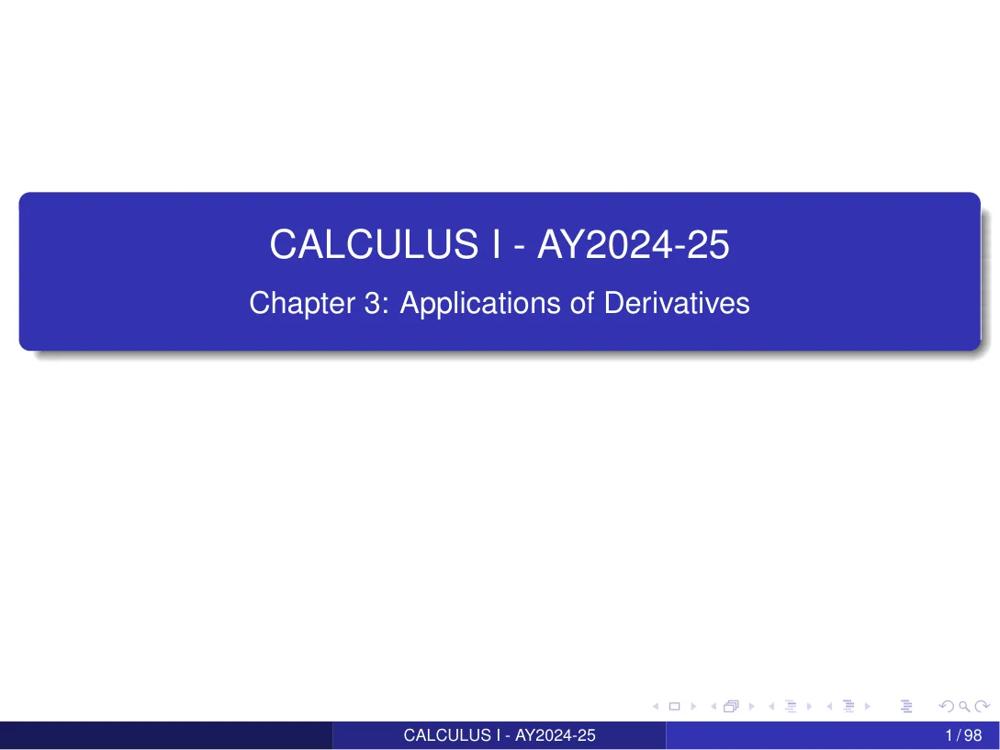
Open Chapter 3. One sentence for the student: so far the derivative was a slope; now it tells us where a function is largest, smallest, rising, falling and bending.
Mở Chương 3. Một câu cho bạn: đến giờ đạo hàm là một hệ số góc; từ nay nó cho biết hàm lớn nhất, nhỏ nhất, tăng, giảm và uốn cong ở đâu.
What the chapter covers · Chương này gồm những gì
★ Context · Bổ trợ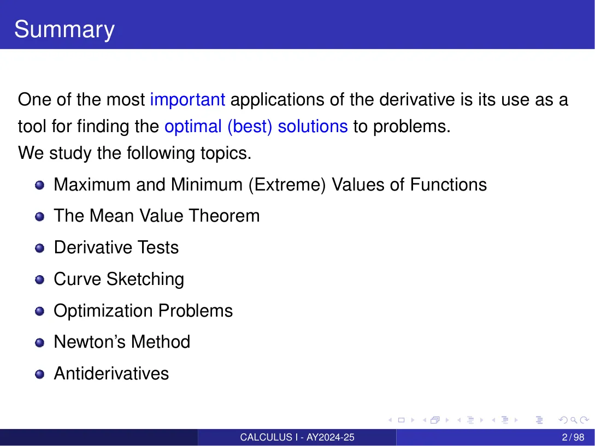
Optimisation is among the most important uses of the derivative. Topics: maximum and minimum values, the Mean Value Theorem, derivative tests, curve sketching, optimisation problems, Newton's method, antiderivatives. Today covers the first four.
Tối ưu hóa là một trong những ứng dụng quan trọng nhất của đạo hàm. Chủ đề: giá trị lớn nhất và nhỏ nhất, định lý giá trị trung bình, các phép thử đạo hàm, khảo sát đồ thị, bài toán tối ưu, phương pháp Newton, nguyên hàm. Hôm nay học bốn phần đầu.
Roadmap of the chapter · Lộ trình của chương
★ Context · Bổ trợ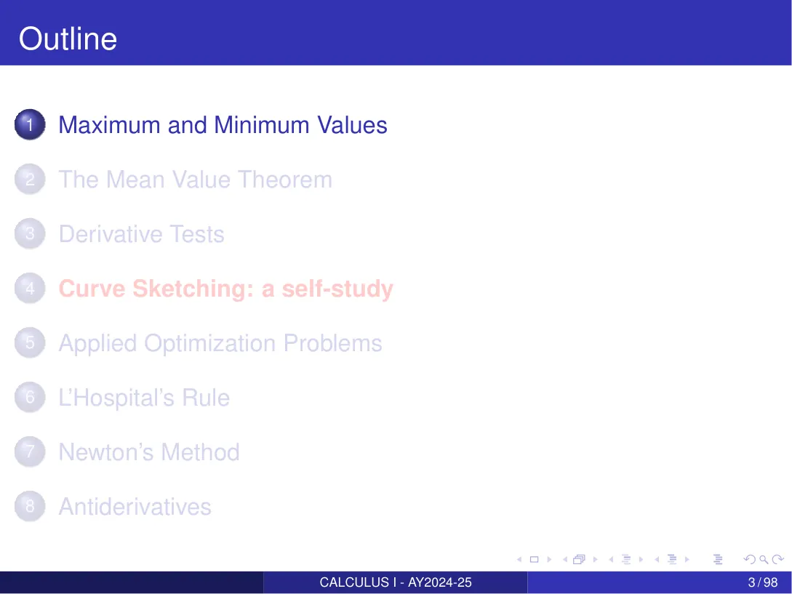
Outline of eight parts. Curve sketching is marked self-study. We are at parts 1–3 today.
Lộ trình tám phần. Khảo sát đồ thị được đánh dấu tự học. Hôm nay ta ở các phần 1–3.
Absolute highest and lowest points · Điểm cao nhất và thấp nhất tuyệt đối
★★ Important · Quan trọng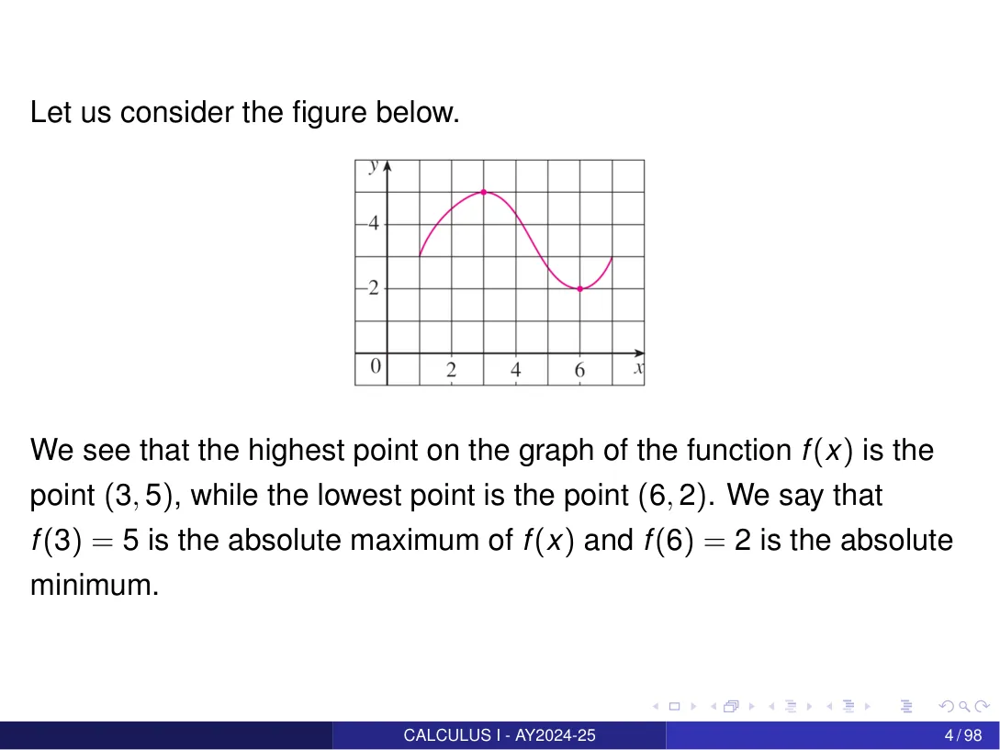
From the graph: the highest point is $(3,5)$ and the lowest is $(6,2)$. So $f(3)=5$ is the absolute maximum and $f(6)=2$ the absolute minimum. Ask the student to point to them on the picture first.
Từ đồ thị: điểm cao nhất là $(3,5)$ và thấp nhất là $(6,2)$. Vậy $f(3)=5$ là giá trị lớn nhất tuyệt đối và $f(6)=2$ là giá trị nhỏ nhất tuyệt đối. Yêu cầu bạn chỉ chúng trên hình trước.
Definition of absolute extrema · Định nghĩa cực trị tuyệt đối
★★★ Core · Cốt lõi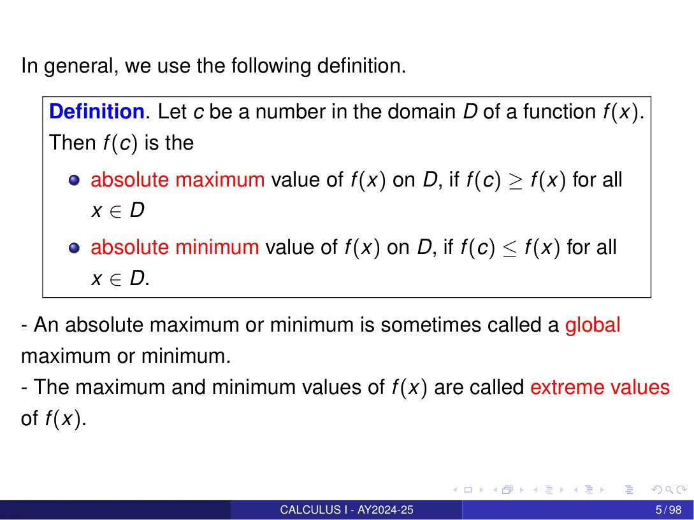
$f(c)$ is the absolute maximum on $D$ if $f(c)\ge f(x)$ for all $x\in D$, the absolute minimum if $f(c)\le f(x)$ for all $x\in D$. Also called global. Maximum and minimum values together are the extreme values. Note: the extreme value is the height $f(c)$, while $c$ is where it is attained.
$f(c)$ là giá trị lớn nhất tuyệt đối trên $D$ nếu $f(c)\ge f(x)$ với mọi $x\in D$, nhỏ nhất tuyệt đối nếu $f(c)\le f(x)$ với mọi $x\in D$. Còn gọi là toàn cục. Giá trị lớn nhất và nhỏ nhất gọi chung là giá trị cực trị. Lưu ý: giá trị cực trị là độ cao $f(c)$, còn $c$ là nơi nó đạt được.
Find the absolute maximum and minimum of $f(x)=x^2$ on $[-1,2]$.
Tìm giá trị lớn nhất và nhỏ nhất của $f(x)=x^2$ trên $[-1,2]$.
Answer and solution · Đáp án và lời giải
Answer · Đáp án: max $4$ (at $x=2$), min $0$ (at $x=0$)
The parabola has its vertex at $0$, so the minimum is $f(0)=0$. At the ends $f(-1)=1$ and $f(2)=4$, so the maximum is $4$.
Parabol có đỉnh tại $0$ nên giá trị nhỏ nhất là $f(0)=0$. Ở hai đầu $f(-1)=1$ và $f(2)=4$ nên giá trị lớn nhất là $4$.
Local extrema in a picture · Cực trị địa phương trong hình
★★ Important · Quan trọng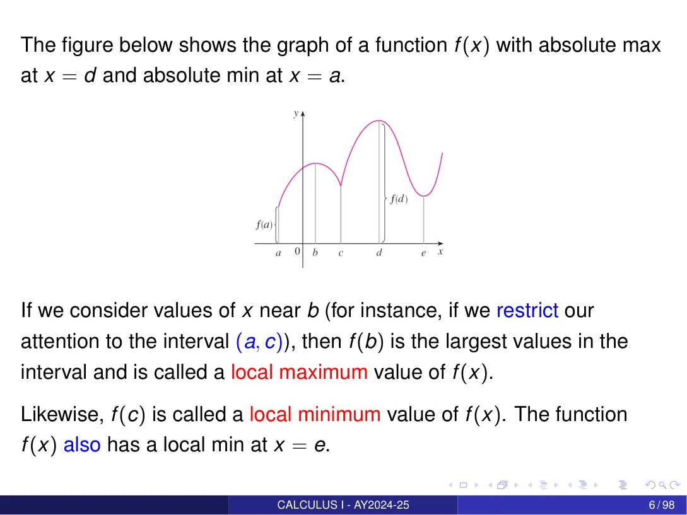
Absolute max at $x=d$ and absolute min at $x=a$. Near $b$ (say on $(a,c)$) $f(b)$ is the largest value: a local maximum. Likewise $f(c)$ is a local minimum, and there is another local minimum at $x=e$. A local extremum is "best in the neighbourhood", not necessarily best overall.
Giá trị lớn nhất tuyệt đối tại $x=d$ và nhỏ nhất tuyệt đối tại $x=a$. Gần $b$ (chẳng hạn trên $(a,c)$) $f(b)$ là giá trị lớn nhất: cực đại địa phương. Tương tự $f(c)$ là cực tiểu địa phương, và còn một cực tiểu địa phương tại $x=e$. Cực trị địa phương là "tốt nhất trong lân cận", không nhất thiết tốt nhất toàn bộ.
Definition of local extrema · Định nghĩa cực trị địa phương
★★★ Core · Cốt lõi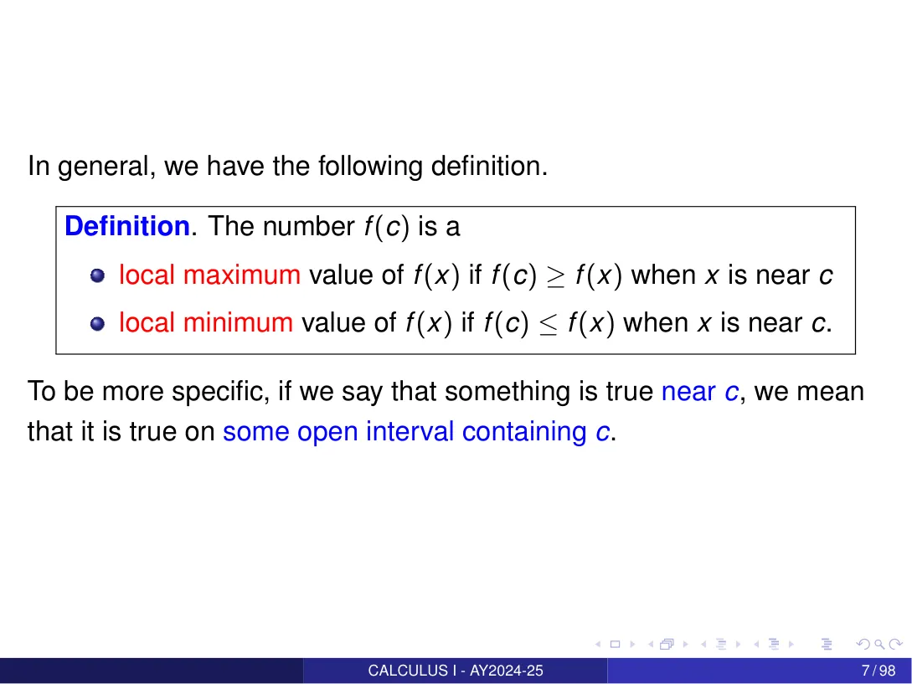
$f(c)$ is a local maximum if $f(c)\ge f(x)$ for $x$ near $c$, a local minimum if $f(c)\le f(x)$ near $c$. "Near $c$" means on some open interval containing $c$ (so endpoints of the domain are not local extrema by this definition).
$f(c)$ là cực đại địa phương nếu $f(c)\ge f(x)$ với $x$ gần $c$, cực tiểu địa phương nếu $f(c)\le f(x)$ gần $c$. "Gần $c$" nghĩa là trên một khoảng mở nào đó chứa $c$ (nên theo định nghĩa này đầu mút của tập xác định không là cực trị địa phương).
The Extreme Value Theorem · Định lý giá trị cực trị
★★★ Core · Cốt lõi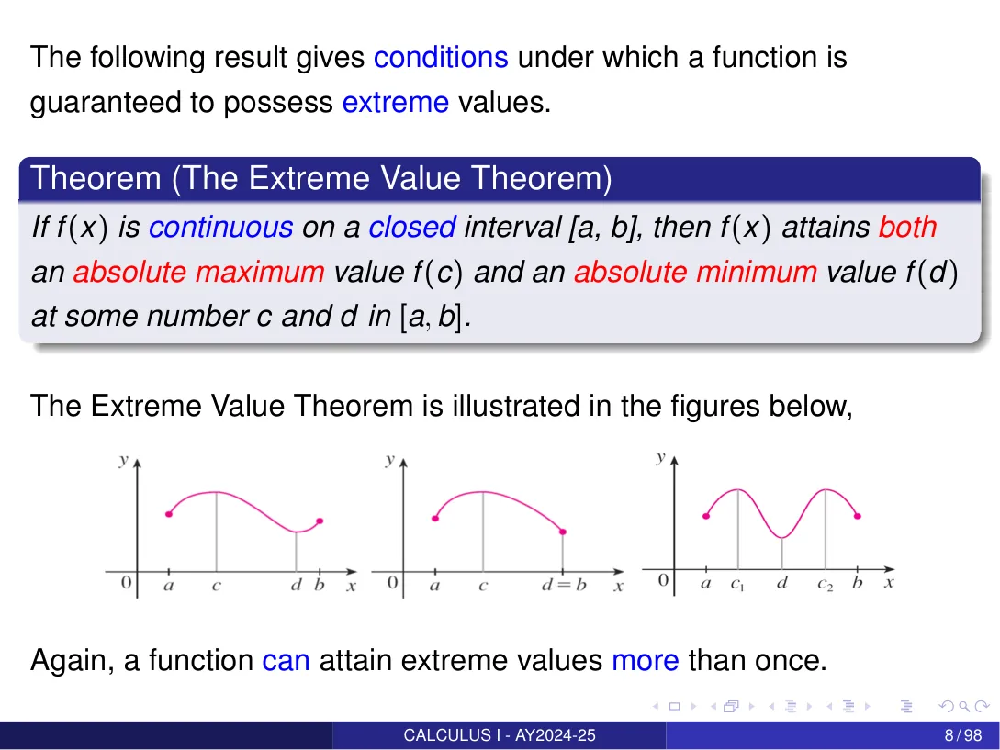
If $f$ is continuous on a closed interval $[a,b]$, it attains both an absolute maximum and an absolute minimum there. The theorem only guarantees existence; it does not say how to find them. The extremes may be attained more than once.
Nếu $f$ liên tục trên đoạn đóng $[a,b]$ thì nó đạt cả giá trị lớn nhất lẫn nhỏ nhất tuyệt đối trên đó. Định lý chỉ đảm bảo sự tồn tại, không nói cách tìm. Các cực trị có thể đạt nhiều lần.
The EVT is the license for the closed interval method: it guarantees that the answer exists, so a search among a finite list of candidates makes sense.
EVT là giấy phép cho phương pháp đoạn đóng: nó đảm bảo đáp án tồn tại, nên việc tìm trong một danh sách hữu hạn ứng viên là hợp lý.
Why continuity and a closed interval are essential · Vì sao liên tục và đoạn đóng là bắt buộc
★★★ Core · Cốt lõi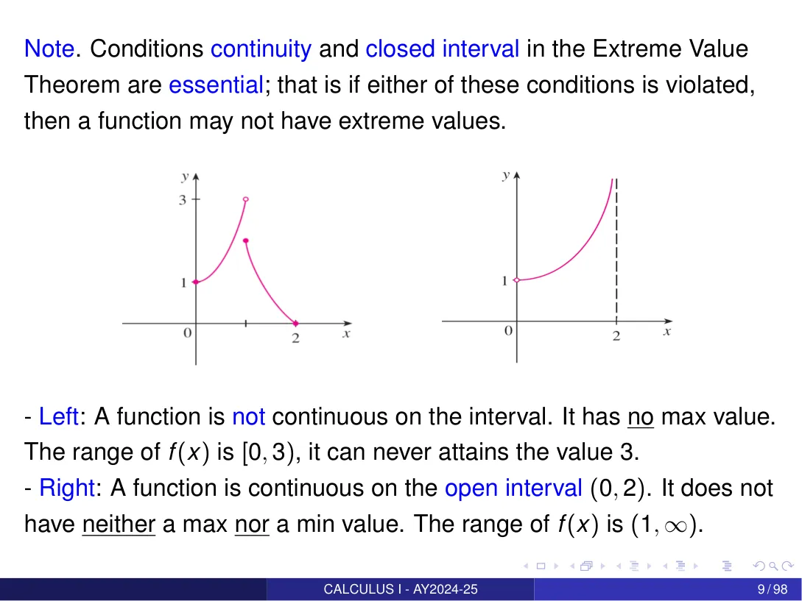
If either hypothesis fails, extremes may not exist. Left picture: not continuous, range $[0,3)$, the value $3$ is never attained, so no maximum. Right picture: continuous but on the open interval $(0,2)$, range $(1,\infty)$, so neither a max nor a min.
Nếu một giả thiết sai, cực trị có thể không tồn tại. Hình trái: không liên tục, tập giá trị $[0,3)$, giá trị $3$ không bao giờ đạt được nên không có giá trị lớn nhất. Hình phải: liên tục nhưng trên khoảng mở $(0,2)$, tập giá trị $(1,\infty)$ nên không có cả max lẫn min.
Does $f(x)=x$ on the open interval $(0,1)$ have a maximum or a minimum?
$f(x)=x$ trên khoảng mở $(0,1)$ có giá trị lớn nhất hay nhỏ nhất không?
Answer and solution · Đáp án và lời giải
Answer · Đáp án: neither
The range is $(0,1)$: values get as close to $0$ and $1$ as we like, but those values are never attained.
Tập giá trị là $(0,1)$: các giá trị tiến sát $0$ và $1$ tùy ý, nhưng không bao giờ đạt được các giá trị đó.
Fermat's Theorem · Định lý Fermat
★★★ Core · Cốt lõi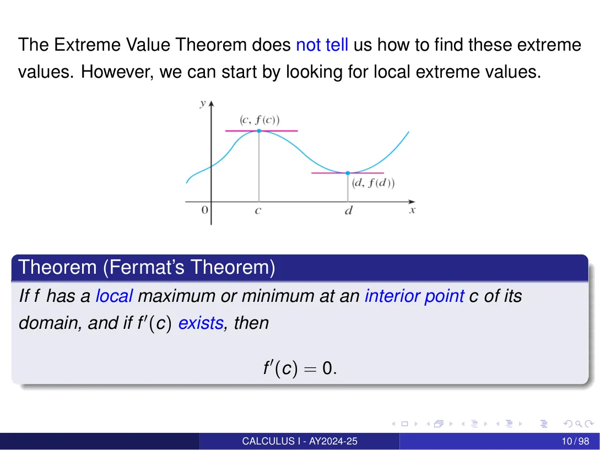
If $f$ has a local maximum or minimum at an interior point $c$ and $f'(c)$ exists, then $f'(c)=0$. At the top of a smooth hill the tangent is horizontal. This tells us where to look for local extremes: among the points where $f'=0$.
Nếu $f$ có cực đại hoặc cực tiểu địa phương tại điểm trong $c$ và $f'(c)$ tồn tại thì $f'(c)=0$. Trên đỉnh một ngọn đồi trơn, tiếp tuyến nằm ngang. Điều này cho biết nơi cần tìm cực trị địa phương: trong số các điểm có $f'=0$.
Use Fermat's theorem to find where $f(x)=x^2-4x+1$ can have a local extremum.
Dùng định lý Fermat tìm nơi $f(x)=x^2-4x+1$ có thể có cực trị địa phương.
Answer and solution · Đáp án và lời giải
Answer · Đáp án: $x=2$ (a minimum, $f(2)=-3$)
$f'(x)=2x-4=0$ gives $x=2$. It is a minimum: the parabola opens upward. $f(2)=4-8+1=-3$.
$f'(x)=2x-4=0$ cho $x=2$. Đó là cực tiểu vì parabol mở lên. $f(2)=4-8+1=-3$.
The converse of Fermat's theorem is false · Mệnh đề đảo của định lý Fermat là sai
★★★ Core · Cốt lõi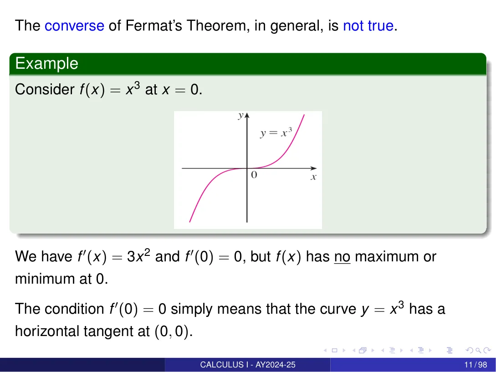
$f(x)=x^3$: $f'(0)=0$ but $0$ is neither a maximum nor a minimum (the values are negative to the left and positive to the right). $f'(c)=0$ only says "horizontal tangent here", which is a candidate, not a conclusion.
$f(x)=x^3$: $f'(0)=0$ nhưng $0$ không phải cực đại cũng không phải cực tiểu (giá trị âm bên trái và dương bên phải). $f'(c)=0$ chỉ nói "tiếp tuyến nằm ngang ở đây", đó là ứng viên chứ không phải kết luận.
Show that $x=0$ is not an extremum of $f(x)=x^3$ although $f'(0)=0$.
Chứng tỏ $x=0$ không phải điểm cực trị của $f(x)=x^3$ dù $f'(0)=0$.
Answer and solution · Đáp án và lời giải
Answer · Đáp án: values of both signs near $0$
$f(-0.1)=-0.001<0=f(0)<0.001=f(0.1)$: $f(0)$ is neither the largest nor the smallest value near $0$.
$f(-0.1)=-0.001<0=f(0)<0.001=f(0.1)$: $f(0)$ không phải giá trị lớn nhất cũng không phải nhỏ nhất gần $0$.
A minimum where the derivative does not exist: $|x|$ · Một cực tiểu nơi đạo hàm không tồn tại: $|x|$
★★★ Core · Cốt lõi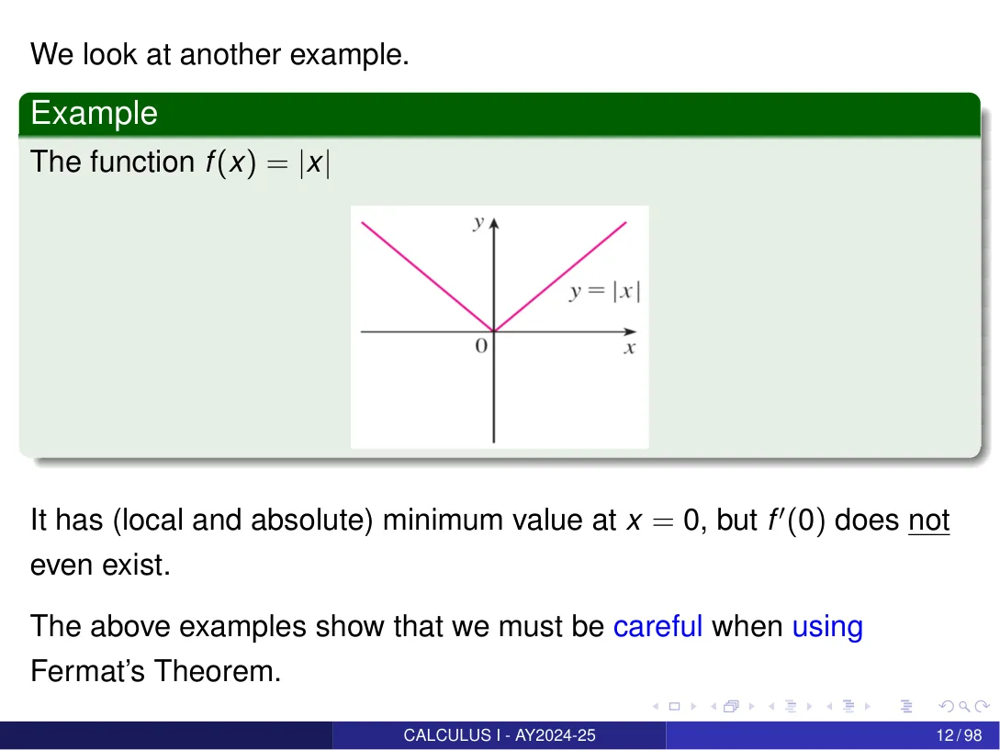
$f(x)=|x|$ has a local and absolute minimum at $0$, but $f'(0)$ does not exist (a corner). So extremes can occur where the derivative is undefined too. Be careful with Fermat: it needs $f'(c)$ to exist.
$f(x)=|x|$ có cực tiểu địa phương và tuyệt đối tại $0$, nhưng $f'(0)$ không tồn tại (điểm góc). Vậy cực trị cũng có thể xảy ra nơi đạo hàm không xác định. Cẩn thận với Fermat: nó đòi $f'(c)$ phải tồn tại.
Is there a tangent line to $y=|x|$ at its minimum? What does that say about Fermat's theorem?
Có tiếp tuyến của $y=|x|$ tại điểm cực tiểu không? Điều đó nói gì về định lý Fermat?
Answer and solution · Đáp án và lời giải
Answer · Đáp án: no tangent: the theorem does not apply
The one-sided slopes are $-1$ and $+1$, so $f'(0)$ does not exist. Fermat's theorem assumes $f'(c)$ exists, so it says nothing here.
Các hệ số góc một phía là $-1$ và $+1$ nên $f'(0)$ không tồn tại. Định lý Fermat giả thiết $f'(c)$ tồn tại nên không nói gì ở đây.
Critical points · Điểm tới hạn
★★★ Core · Cốt lõi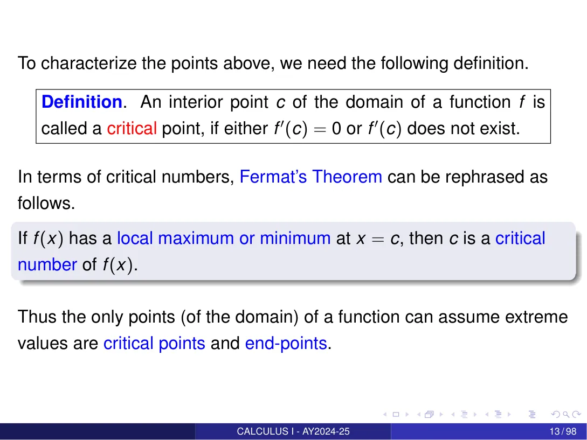
An interior point $c$ is a critical point if $f'(c)=0$ or $f'(c)$ does not exist. Fermat rephrased: a local extremum can only occur at a critical point. Together with the endpoints, critical points are the only candidates for extreme values.
Điểm trong $c$ là điểm tới hạn nếu $f'(c)=0$ hoặc $f'(c)$ không tồn tại. Fermat phát biểu lại: cực trị địa phương chỉ có thể xảy ra tại điểm tới hạn. Cùng với các đầu mút, điểm tới hạn là những ứng viên duy nhất cho giá trị cực trị.
Finding critical points is the first step of every optimisation and curve-sketching problem; forgetting the points where $f'$ does not exist is a typical loss of marks.
Tìm điểm tới hạn là bước đầu của mọi bài tối ưu và khảo sát; quên các điểm mà $f'$ không tồn tại là cách mất điểm điển hình.
Find the critical points of $f(x)=x^3-3x^2$.
Tìm các điểm tới hạn của $f(x)=x^3-3x^2$.
Answer and solution · Đáp án và lời giải
Answer · Đáp án: $x=0$ and $x=2$
$f'(x)=3x^2-6x=3x(x-2)$ is defined everywhere and vanishes at $0$ and $2$.
$f'(x)=3x^2-6x=3x(x-2)$ xác định khắp nơi và bằng $0$ tại $0$ và $2$.
Find the critical points of $g(x)=x^{2/3}$.
Tìm các điểm tới hạn của $g(x)=x^{2/3}$.
Answer and solution · Đáp án và lời giải
Answer · Đáp án: $x=0$ (where $g'$ does not exist)
$g'(x)=\frac23x^{-1/3}$ never vanishes, but it is undefined at $x=0$ (and $g'\to\infty$ from the right): $0$ is critical. Here it is a minimum.
$g'(x)=\frac23x^{-1/3}$ không bao giờ bằng $0$, nhưng không xác định tại $x=0$ (và $g'\to\infty$ từ bên phải): $0$ là điểm tới hạn. Ở đây nó là một cực tiểu.
The Closed Interval Method · Phương pháp đoạn đóng
★★★ Core · Cốt lõi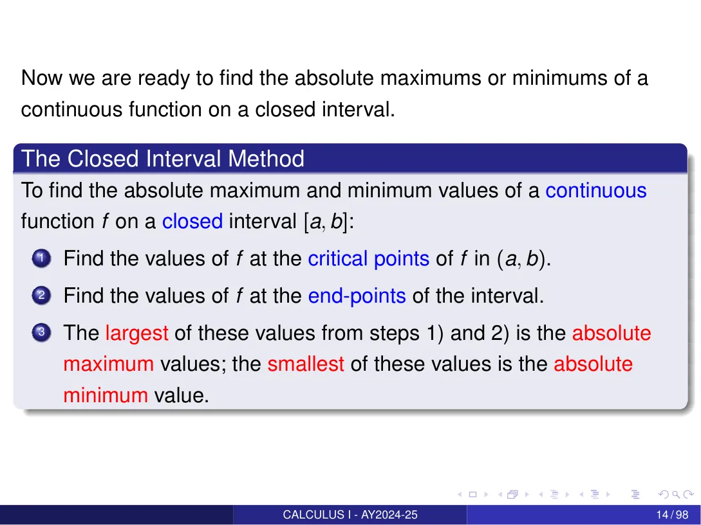
To find the absolute max and min of a continuous $f$ on $[a,b]$: (1) find $f$ at the critical points inside $(a,b)$; (2) find $f$ at the two endpoints; (3) the largest value is the maximum, the smallest is the minimum. This is a three-line recipe with a guaranteed answer by the EVT.
Để tìm giá trị lớn nhất và nhỏ nhất tuyệt đối của $f$ liên tục trên $[a,b]$: (1) tính $f$ tại các điểm tới hạn trong $(a,b)$; (2) tính $f$ tại hai đầu mút; (3) giá trị lớn nhất trong các số đó là max, nhỏ nhất là min. Đây là công thức ba dòng có đáp án được EVT đảm bảo.
This is the standard optimisation exercise in tests: "find the absolute maximum and minimum of ... on $[a,b]$".
Đây là bài tối ưu chuẩn trong đề thi: "tìm giá trị lớn nhất và nhỏ nhất của ... trên $[a,b]$".
Example: the closed interval method · Ví dụ: phương pháp đoạn đóng
★★★ Core · Cốt lõi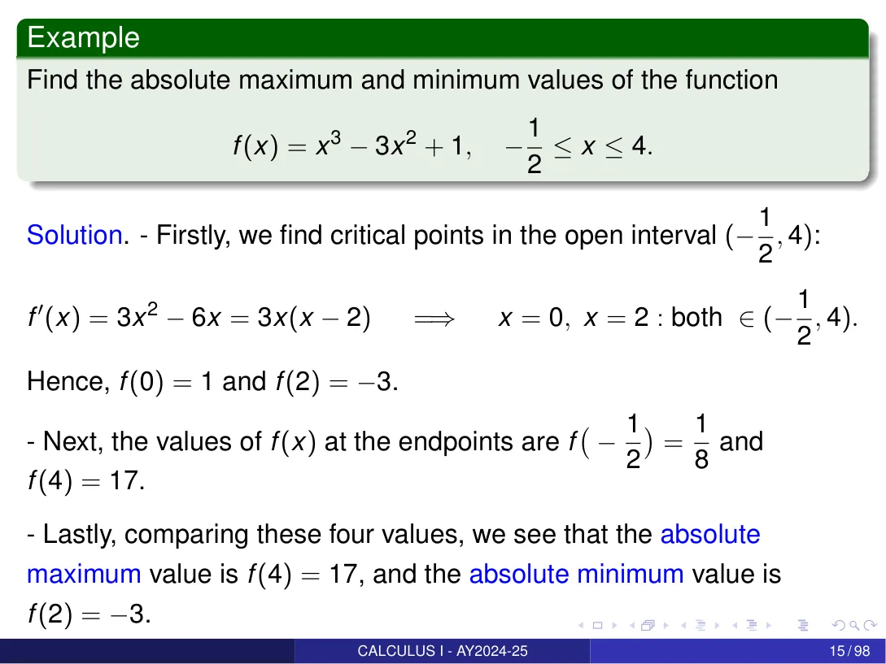
$f(x)=x^3-3x^2+1$ on $[-\frac12,4]$. $f'(x)=3x(x-2)$ gives $x=0,2$, both inside. Values: $f(0)=1$, $f(2)=-3$; at the ends $f(-\frac12)=\frac18$ and $f(4)=17$. Compare the four numbers: absolute max $17$ at $x=4$, absolute min $-3$ at $x=2$.
$f(x)=x^3-3x^2+1$ trên $[-\frac12,4]$. $f'(x)=3x(x-2)$ cho $x=0,2$, đều nằm trong. Giá trị: $f(0)=1$, $f(2)=-3$; ở hai đầu $f(-\frac12)=\frac18$ và $f(4)=17$. So sánh bốn số: max tuyệt đối $17$ tại $x=4$, min tuyệt đối $-3$ tại $x=2$.
Find the absolute extrema of $f(x)=2x^3-3x^2-12x+1$ on $[-2,3]$.
Tìm cực trị tuyệt đối của $f(x)=2x^3-3x^2-12x+1$ trên $[-2,3]$.
Answer and solution · Đáp án và lời giải
Answer · Đáp án: max $8$ at $x=-1$; min $-19$ at $x=2$
$f'(x)=6x^2-6x-12=6(x-2)(x+1)$: critical points $-1,2$. Values: $f(-2)=-3$, $f(-1)=8$, $f(2)=-19$, $f(3)=-8$.
$f'(x)=6x^2-6x-12=6(x-2)(x+1)$: điểm tới hạn $-1,2$. Giá trị: $f(-2)=-3$, $f(-1)=8$, $f(2)=-19$, $f(3)=-8$.
The graph of the example · Đồ thị của ví dụ
★★ Important · Quan trọng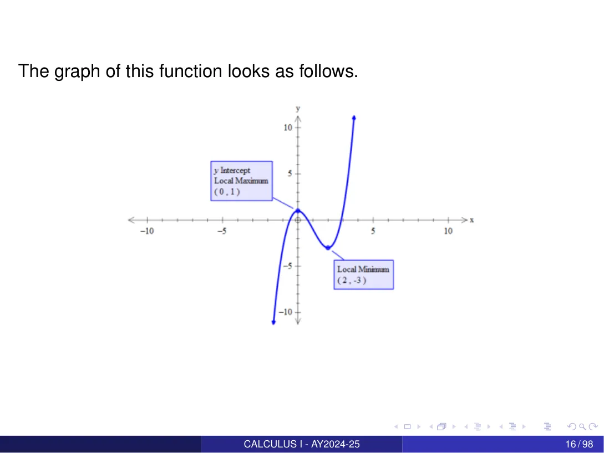
The graph confirms the table: starts near $\frac18$ at $x=-\frac12$, a local max at $x=0$, falls to the minimum $-3$ at $x=2$, then climbs to $17$ at $x=4$. Always make the picture match the numbers.
Đồ thị khớp với bảng: bắt đầu gần $\frac18$ tại $x=-\frac12$, cực đại địa phương tại $x=0$, giảm tới cực tiểu $-3$ tại $x=2$, rồi tăng lên $17$ tại $x=4$. Luôn kiểm tra hình vẽ khớp với các con số.
Roadmap: the Mean Value Theorem · Lộ trình: định lý giá trị trung bình
★ Context · Bổ trợ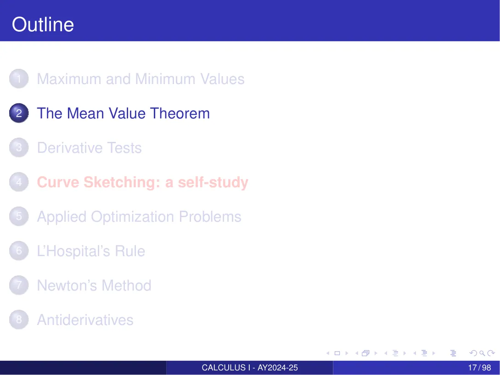
Outline: now part 2, the Mean Value Theorem.
Lộ trình: nay là phần 2, định lý giá trị trung bình.
Rolle's Theorem · Định lý Rolle
★★★ Core · Cốt lõi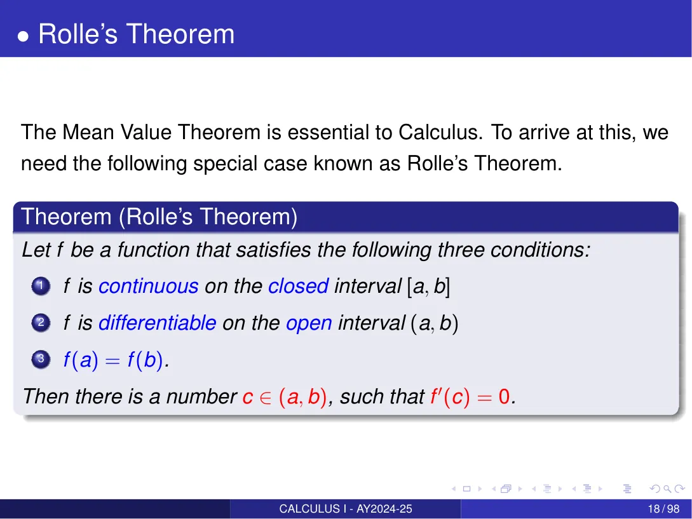
Rolle: if $f$ is (1) continuous on $[a,b]$, (2) differentiable on $(a,b)$, (3) $f(a)=f(b)$, then there is $c\in(a,b)$ with $f'(c)=0$. Check all three hypotheses. It is the special case of the MVT with a horizontal chord.
Rolle: nếu $f$ (1) liên tục trên $[a,b]$, (2) khả vi trên $(a,b)$, (3) $f(a)=f(b)$ thì tồn tại $c\in(a,b)$ với $f'(c)=0$. Kiểm tra cả ba giả thiết. Đây là trường hợp đặc biệt của MVT với dây cung nằm ngang.
Verify Rolle's theorem for $f(x)=x^2-4x+3$ on $[1,3]$ and find $c$.
Kiểm tra định lý Rolle cho $f(x)=x^2-4x+3$ trên $[1,3]$ và tìm $c$.
Answer and solution · Đáp án và lời giải
Answer · Đáp án: $c=2$
Polynomial, so continuous and differentiable; $f(1)=0=f(3)$. $f'(x)=2x-4=0$ gives $c=2\in(1,3)$.
Đa thức nên liên tục và khả vi; $f(1)=0=f(3)$. $f'(x)=2x-4=0$ cho $c=2\in(1,3)$.
Rolle's Theorem in pictures · Định lý Rolle qua hình vẽ
★★ Important · Quan trọng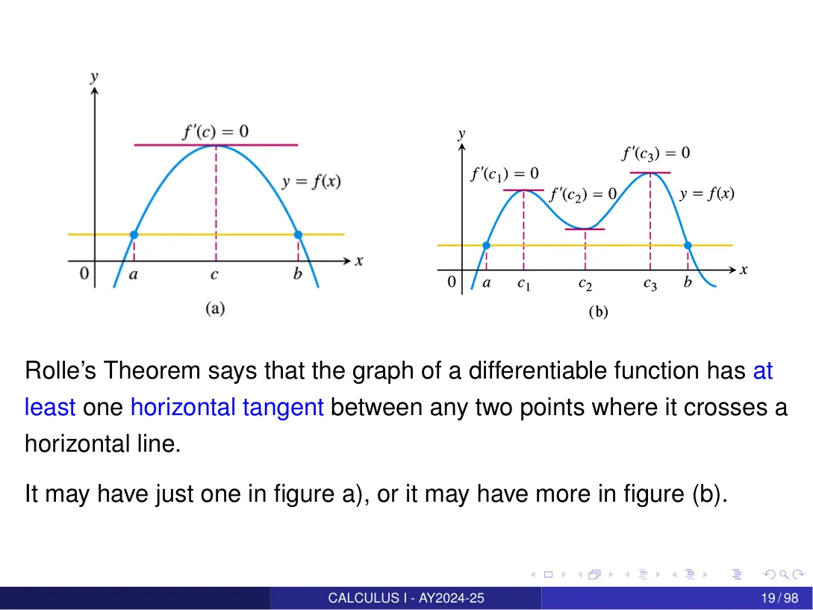
Between any two points where a differentiable graph crosses a horizontal line there is at least one horizontal tangent: maybe exactly one (picture a), maybe several (picture b).
Giữa hai điểm bất kỳ mà đồ thị khả vi cắt một đường ngang có ít nhất một tiếp tuyến nằm ngang: có thể đúng một (hình a), có thể nhiều (hình b).
Example: exactly one root, part 1 (existence) · Ví dụ: đúng một nghiệm, phần 1 (tồn tại)
★★★ Core · Cốt lõi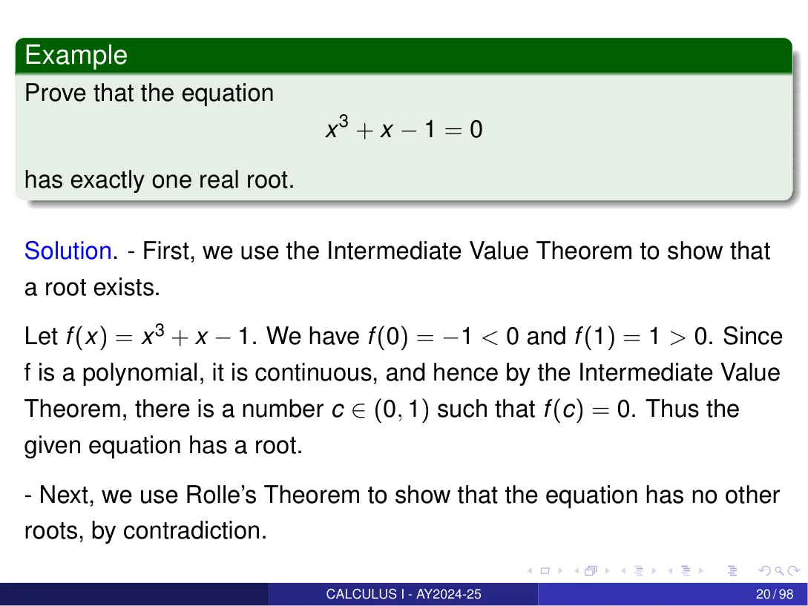
Prove $x^3+x-1=0$ has exactly one real root. Step 1, existence by the IVT: $f(0)=-1<0$ and $f(1)=1>0$, $f$ continuous, so a root exists in $(0,1)$. Step 2 (next slide) uses Rolle to rule out a second root.
Chứng minh $x^3+x-1=0$ có đúng một nghiệm thực. Bước 1, tồn tại nhờ IVT: $f(0)=-1<0$ và $f(1)=1>0$, $f$ liên tục nên có nghiệm trong $(0,1)$. Bước 2 (slide sau) dùng Rolle để loại nghiệm thứ hai.
Example: exactly one root, part 2 (uniqueness by Rolle) · Ví dụ: đúng một nghiệm, phần 2 (duy nhất nhờ Rolle)
★★★ Core · Cốt lõi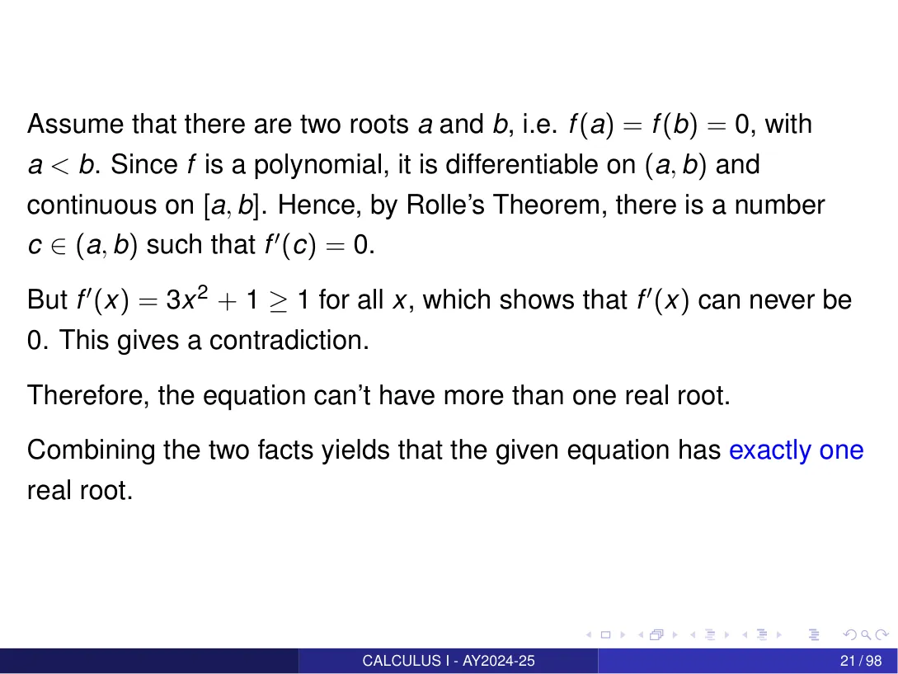
Suppose two roots $a<b$, $f(a)=f(b)=0$. $f$ is a polynomial, so Rolle gives $c\in(a,b)$ with $f'(c)=0$. But $f'(x)=3x^2+1\ge1$ is never $0$: contradiction. So there is exactly one root. Template: IVT for existence, Rolle (contradiction) for uniqueness.
Giả sử có hai nghiệm $a<b$, $f(a)=f(b)=0$. $f$ là đa thức nên Rolle cho $c\in(a,b)$ với $f'(c)=0$. Nhưng $f'(x)=3x^2+1\ge1$ không bao giờ bằng $0$: mâu thuẫn. Vậy có đúng một nghiệm. Khuôn mẫu: IVT cho sự tồn tại, Rolle (phản chứng) cho tính duy nhất.
Show that $x^3+2x+1=0$ has exactly one real root.
Chứng tỏ $x^3+2x+1=0$ có đúng một nghiệm thực.
Answer and solution · Đáp án và lời giải
Answer · Đáp án: exactly one root, in $(-1,0)$
Existence: $f(-1)=-2<0$ and $f(0)=1>0$ (IVT). Uniqueness: two roots would give $f'(c)=3c^2+2=0$ by Rolle, impossible since $3c^2+2\ge2$.
Tồn tại: $f(-1)=-2<0$ và $f(0)=1>0$ (IVT). Duy nhất: hai nghiệm sẽ cho $f'(c)=3c^2+2=0$ theo Rolle, không thể vì $3c^2+2\ge2$.
The Mean Value Theorem (Lagrange) · Định lý giá trị trung bình (Lagrange)
★★★ Core · Cốt lõi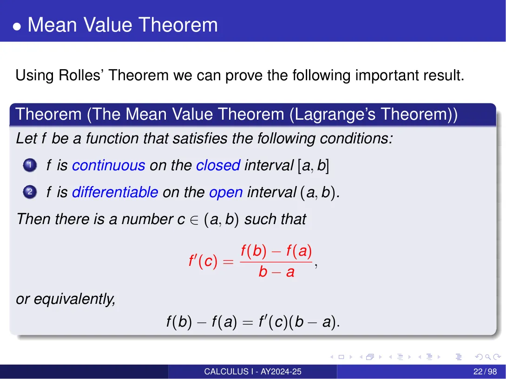
MVT: if $f$ is continuous on $[a,b]$ and differentiable on $(a,b)$, there is $c\in(a,b)$ with $f'(c)=\frac{f(b)-f(a)}{b-a}$, equivalently $f(b)-f(a)=f'(c)(b-a)$. In words: at some moment the instantaneous rate equals the average rate.
MVT: nếu $f$ liên tục trên $[a,b]$ và khả vi trên $(a,b)$ thì tồn tại $c\in(a,b)$ với $f'(c)=\frac{f(b)-f(a)}{b-a}$, tương đương $f(b)-f(a)=f'(c)(b-a)$. Nói bằng lời: tại một thời điểm nào đó tốc độ tức thời bằng tốc độ trung bình.
The MVT is the theoretical engine of Chapter 3: it proves the monotonic test and the fact that functions with the same derivative differ by a constant, which is the basis of antiderivatives.
MVT là động cơ lý thuyết của Chương 3: nó chứng minh phép thử đơn điệu và việc hai hàm cùng đạo hàm chỉ khác nhau một hằng số, nền tảng của nguyên hàm.
Find the number $c$ promised by the MVT for $f(x)=x^3$ on $[0,2]$.
Tìm số $c$ mà MVT bảo đảm cho $f(x)=x^3$ trên $[0,2]$.
Answer and solution · Đáp án và lời giải
Answer · Đáp án: $c=\dfrac{2}{\sqrt3}\approx1.155$
Average slope $\frac{8-0}{2}=4$. Solve $3c^2=4$: $c=\frac2{\sqrt3}$, which lies in $(0,2)$.
Hệ số góc trung bình $\frac{8-0}{2}=4$. Giải $3c^2=4$: $c=\frac2{\sqrt3}$, nằm trong $(0,2)$.
Geometric meaning of the MVT · Ý nghĩa hình học của MVT
★★★ Core · Cốt lõi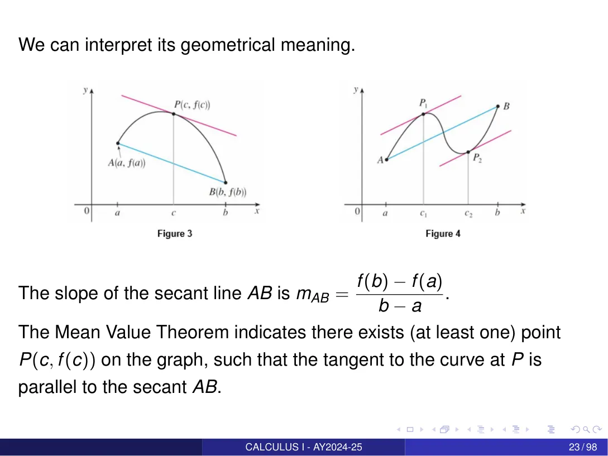
The secant $AB$ has slope $\frac{f(b)-f(a)}{b-a}$. The MVT says there is at least one point $P(c,f(c))$ on the graph where the tangent is parallel to the secant $AB$. Slide the secant parallel to itself until it just touches the curve.
Cát tuyến $AB$ có hệ số góc $\frac{f(b)-f(a)}{b-a}$. MVT nói tồn tại ít nhất một điểm $P(c,f(c))$ trên đồ thị mà tiếp tuyến song song với cát tuyến $AB$. Tịnh tiến cát tuyến song song với chính nó cho đến khi vừa chạm đường cong.
Exercise: a car and the speedometer · Bài tập: ô tô và đồng hồ tốc độ
★★★ Core · Cốt lõi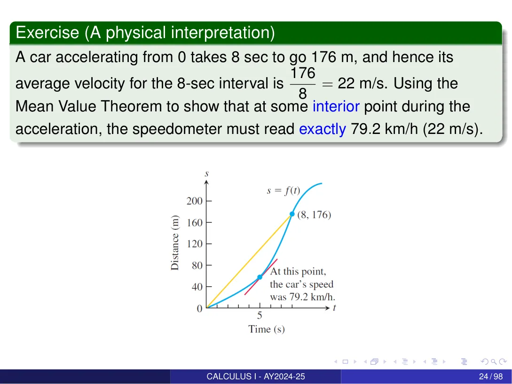
A car from rest covers $176$ m in $8$ s, so its average velocity is $\frac{176}8=22$ m/s. Position is continuous and differentiable, so by the MVT there is a moment in $(0,8)$ when the velocity is exactly $22$ m/s. And $22$ m/s $=22\times3.6=79.2$ km/h. So the speedometer reads exactly $79.2$ km/h at some instant.
Một ô tô xuất phát từ nghỉ đi được $176$ m trong $8$ s, nên vận tốc trung bình là $\frac{176}8=22$ m/s. Vị trí liên tục và khả vi nên theo MVT có một thời điểm trong $(0,8)$ mà vận tốc đúng bằng $22$ m/s. Và $22$ m/s $=22\times3.6=79.2$ km/h. Vậy tại một lúc nào đó đồng hồ chỉ đúng $79.2$ km/h.
A runner covers $42$ km in $3.5$ hours. Show that at some instant the speed was exactly $12$ km/h.
Một vận động viên chạy $42$ km trong $3.5$ giờ. Chứng tỏ tại một thời điểm nào đó tốc độ đúng bằng $12$ km/h.
Answer and solution · Đáp án và lời giải
Answer · Đáp án: by the MVT, average speed $=12$
The average velocity is $\frac{42}{3.5}=12$ km/h; position is continuous and differentiable, so the MVT gives a time $c$ with $s'(c)=12$.
Vận tốc trung bình là $\frac{42}{3.5}=12$ km/h; vị trí liên tục và khả vi nên MVT cho thời điểm $c$ với $s'(c)=12$.
Consequences of the MVT · Hệ quả của MVT
★★★ Core · Cốt lõi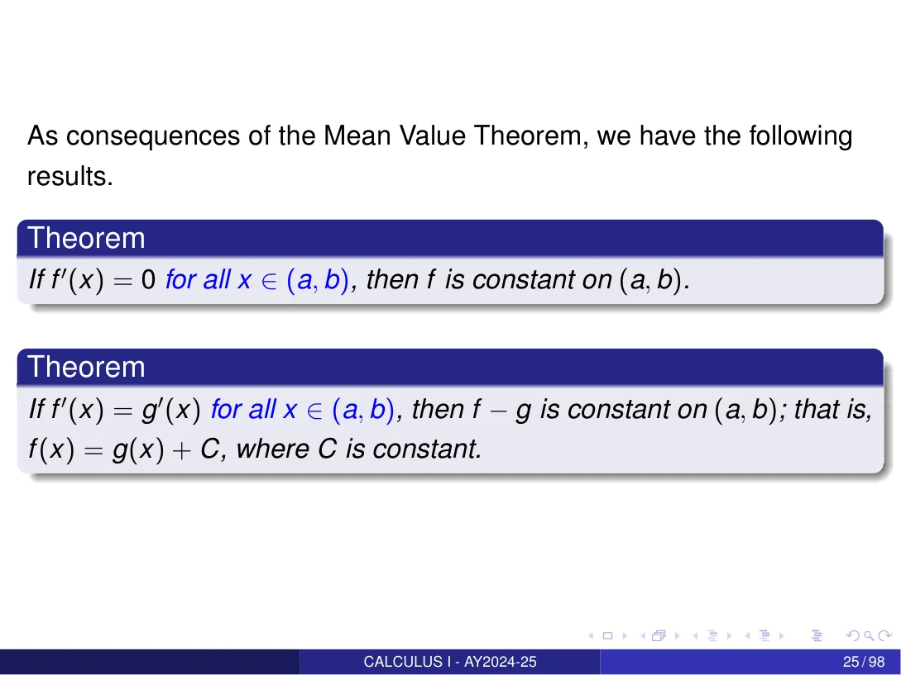
(1) If $f'(x)=0$ on an interval, $f$ is constant there. (2) If $f'=g'$ on an interval, then $f=g+C$: two functions with the same derivative differ by a constant. This is why an antiderivative is determined only up to $+C$.
(1) Nếu $f'(x)=0$ trên một khoảng thì $f$ là hằng trên đó. (2) Nếu $f'=g'$ trên một khoảng thì $f=g+C$: hai hàm có cùng đạo hàm chỉ khác nhau một hằng số. Vì vậy nguyên hàm chỉ xác định đến $+C$.
If $f'(x)=2x$ for all $x$ and $f(0)=3$, find $f$.
Nếu $f'(x)=2x$ với mọi $x$ và $f(0)=3$, tìm $f$.
Answer and solution · Đáp án và lời giải
Answer · Đáp án: $f(x)=x^2+3$
$x^2$ also has derivative $2x$, so $f(x)=x^2+C$. Then $f(0)=C=3$.
$x^2$ cũng có đạo hàm $2x$ nên $f(x)=x^2+C$. Khi đó $f(0)=C=3$.
Care needed: the domain must be an interval · Cần cẩn thận: tập xác định phải là một khoảng
★★ Important · Quan trọng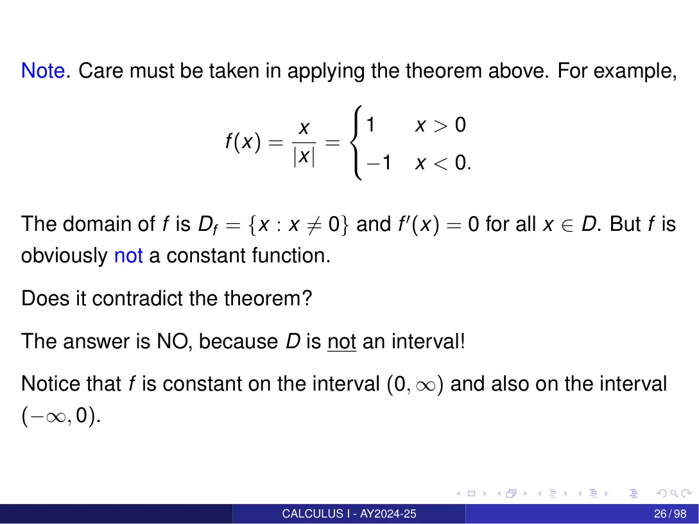
$f(x)=\frac{x}{|x|}$ equals $1$ for $x>0$ and $-1$ for $x<0$, with $f'(x)=0$ on its whole domain $\mathbb R\setminus\{0\}$, yet $f$ is not constant. No contradiction: the domain is not an interval. $f$ is constant on $(0,\infty)$ and on $(-\infty,0)$ separately.
$f(x)=\frac{x}{|x|}$ bằng $1$ khi $x>0$ và $-1$ khi $x<0$, với $f'(x)=0$ trên toàn tập xác định $\mathbb R\setminus\{0\}$, nhưng $f$ không là hằng. Không mâu thuẫn: tập xác định không phải một khoảng. $f$ là hằng riêng trên $(0,\infty)$ và trên $(-\infty,0)$.
Check that $f(x)=\dfrac x{|x|}$ has $f'=0$ at $x=3$ and at $x=-3$.
Kiểm tra $f(x)=\dfrac x{|x|}$ có $f'=0$ tại $x=3$ và tại $x=-3$.
Answer and solution · Đáp án và lời giải
Answer · Đáp án: $f'(\pm3)=0$
For $x>0$, $f=1$; for $x<0$, $f=-1$: constant pieces, so the derivative is $0$ on each.
Với $x>0$, $f=1$; với $x<0$, $f=-1$: các khúc hằng nên đạo hàm bằng $0$ trên từng khúc.
Roadmap: derivative tests · Lộ trình: các phép thử đạo hàm
★ Context · Bổ trợ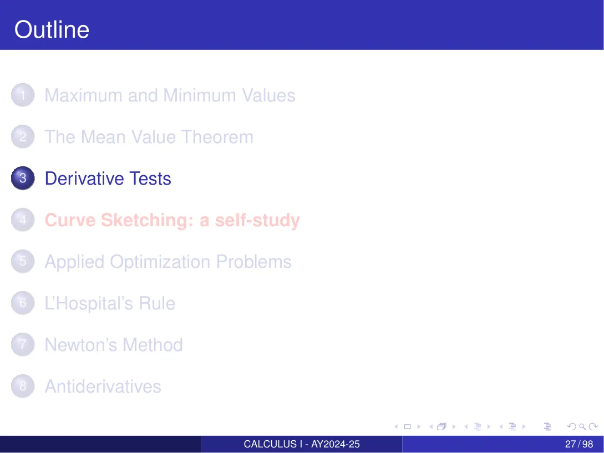
Outline: part 3, derivative tests.
Lộ trình: phần 3, các phép thử đạo hàm.
What $f'$ says about $f$ · $f'$ cho biết gì về $f$
★★★ Core · Cốt lõi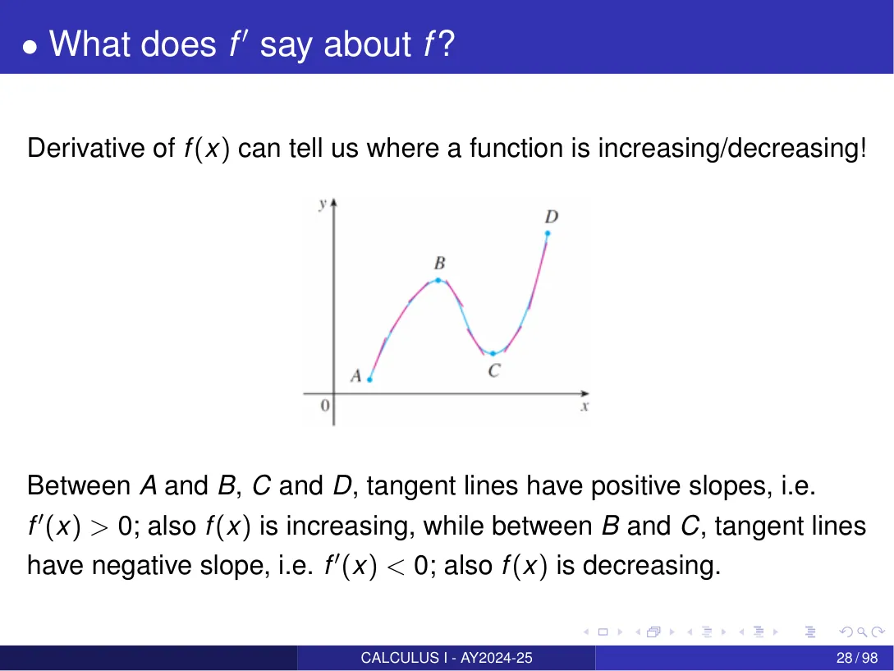
Tangent slopes give the direction of the graph: between $A$ and $B$ and between $C$ and $D$ the slopes are positive ($f'>0$) and $f$ rises; between $B$ and $C$ they are negative ($f'<0$) and $f$ falls.
Hệ số góc tiếp tuyến cho biết chiều của đồ thị: giữa $A$ và $B$, giữa $C$ và $D$ hệ số góc dương ($f'>0$) và $f$ tăng; giữa $B$ và $C$ hệ số góc âm ($f'<0$) và $f$ giảm.
The monotonic test and the First Derivative Test · Phép thử đơn điệu và phép thử đạo hàm bậc một
★★★ Core · Cốt lõi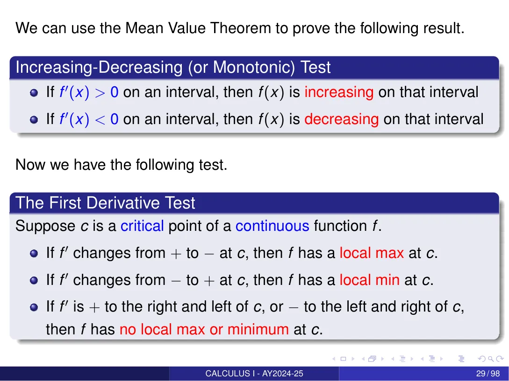
Monotonic test: $f'>0$ on an interval $\Rightarrow$ increasing; $f'<0\Rightarrow$ decreasing (proved with the MVT). First Derivative Test at a critical point $c$ of a continuous $f$: $f'$ changes $+\to-$: local max; $-\to+$: local min; no sign change: no extremum. Method: make a sign table of $f'$.
Phép thử đơn điệu: $f'>0$ trên một khoảng $\Rightarrow$ tăng; $f'<0\Rightarrow$ giảm (chứng minh bằng MVT). Phép thử đạo hàm bậc một tại điểm tới hạn $c$ của $f$ liên tục: $f'$ đổi dấu $+\to-$: cực đại; $-\to+$: cực tiểu; không đổi dấu: không có cực trị. Cách làm: lập bảng xét dấu $f'$.
The sign table of $f'$ is the workhorse of curve sketching and optimisation, and the First Derivative Test is the safest test because it never fails.
Bảng xét dấu $f'$ là công cụ chính của khảo sát và tối ưu, và phép thử đạo hàm bậc một là phép thử an toàn nhất vì không bao giờ thất bại.
Find the intervals of increase and decrease and the local extrema of $f(x)=x^3-3x$.
Tìm các khoảng tăng, giảm và cực trị địa phương của $f(x)=x^3-3x$.
Answer and solution · Đáp án và lời giải
Answer · Đáp án: increasing on $(-\infty,-1)$ and $(1,\infty)$, decreasing on $(-1,1)$; local max $f(-1)=2$, local min $f(1)=-2$
$f'(x)=3(x^2-1)=3(x-1)(x+1)$: positive for $x<-1$, negative on $(-1,1)$, positive for $x>1$. The sign goes $+\to-$ at $-1$ (max) and $-\to+$ at $1$ (min).
$f'(x)=3(x^2-1)=3(x-1)(x+1)$: dương khi $x<-1$, âm trên $(-1,1)$, dương khi $x>1$. Dấu đổi $+\to-$ tại $-1$ (cực đại) và $-\to+$ tại $1$ (cực tiểu).
First Derivative Test: the four sign patterns · Phép thử đạo hàm bậc một: bốn kiểu đổi dấu
★★ Important · Quan trọng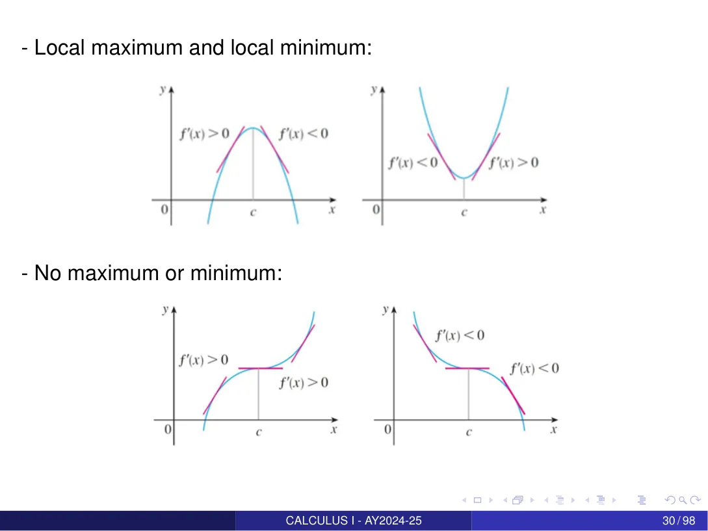
Top picture: a local max ($+\to-$) and a local min ($-\to+$). Bottom picture: no extremum when $f'$ keeps the same sign on both sides, as for $x^3$ at $0$. Ask the student to describe each picture by the sign of $f'$.
Hình trên: cực đại ($+\to-$) và cực tiểu ($-\to+$). Hình dưới: không có cực trị khi $f'$ giữ nguyên dấu hai bên, như $x^3$ tại $0$. Yêu cầu bạn mô tả mỗi hình theo dấu của $f'$.
Example: critical points of $x+2\sin x$ · Ví dụ: điểm tới hạn của $x+2\sin x$
★★★ Core · Cốt lõi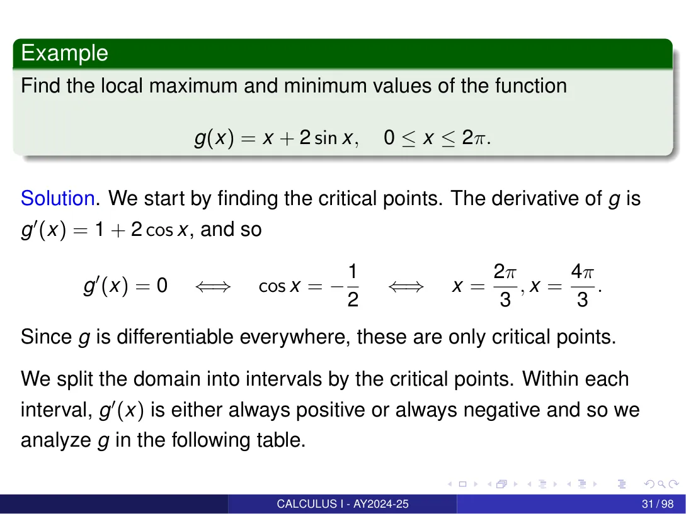
$g(x)=x+2\sin x$ on $[0,2\pi]$. $g'(x)=1+2\cos x=0\iff\cos x=-\frac12\iff x=\frac{2\pi}3$ or $\frac{4\pi}3$. $g$ is differentiable everywhere, so these are the only critical points. Split the domain at them and sign $g'$ on each piece.
$g(x)=x+2\sin x$ trên $[0,2\pi]$. $g'(x)=1+2\cos x=0\iff\cos x=-\frac12\iff x=\frac{2\pi}3$ hoặc $\frac{4\pi}3$. $g$ khả vi khắp nơi nên đây là các điểm tới hạn duy nhất. Chia tập xác định tại các điểm đó và xét dấu $g'$ trên từng đoạn.
Example: the conclusion from the sign table · Ví dụ: kết luận từ bảng xét dấu
★★★ Core · Cốt lõi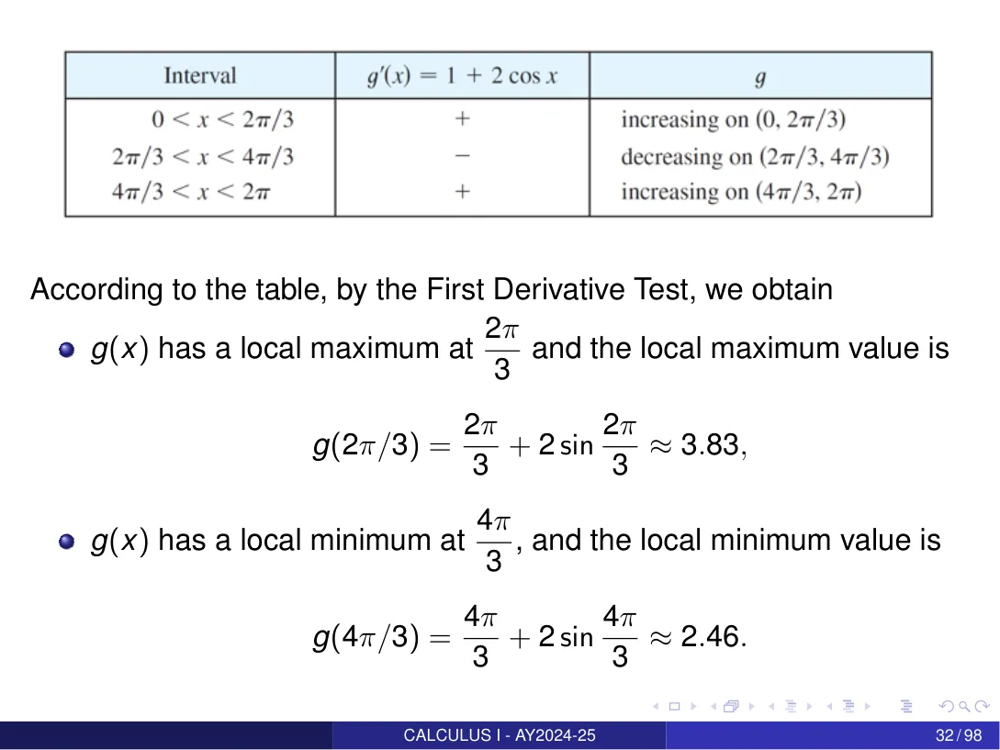
$g'>0$ on $(0,\frac{2\pi}3)$, $<0$ on $(\frac{2\pi}3,\frac{4\pi}3)$, $>0$ after. So local max at $\frac{2\pi}3$ with value $\frac{2\pi}3+2\sin\frac{2\pi}3=\frac{2\pi}3+\sqrt3\approx3.83$, and local min at $\frac{4\pi}3$ with value $\frac{4\pi}3-\sqrt3\approx2.46$.
$g'>0$ trên $(0,\frac{2\pi}3)$, $<0$ trên $(\frac{2\pi}3,\frac{4\pi}3)$, $>0$ sau đó. Vậy cực đại địa phương tại $\frac{2\pi}3$ với giá trị $\frac{2\pi}3+2\sin\frac{2\pi}3=\frac{2\pi}3+\sqrt3\approx3.83$, và cực tiểu địa phương tại $\frac{4\pi}3$ với giá trị $\frac{4\pi}3-\sqrt3\approx2.46$.
Classify the critical point of $f(x)=xe^{-x}$.
Phân loại điểm tới hạn của $f(x)=xe^{-x}$.
Answer and solution · Đáp án và lời giải
Answer · Đáp án: local (and absolute) max at $x=1$, $f(1)=\dfrac1e$
$f'(x)=(1-x)e^{-x}$: positive for $x<1$, negative for $x>1$, so the sign goes $+\to-$ at $x=1$: a maximum with $f(1)=e^{-1}$.
$f'(x)=(1-x)e^{-x}$: dương khi $x<1$, âm khi $x>1$ nên dấu đổi $+\to-$ tại $x=1$: cực đại với $f(1)=e^{-1}$.
Check the slide's values: $g(2\pi/3)$ and $g(4\pi/3)$ for $g(x)=x+2\sin x$.
Kiểm tra các giá trị trên slide: $g(2\pi/3)$ và $g(4\pi/3)$ với $g(x)=x+2\sin x$.
Answer and solution · Đáp án và lời giải
Answer · Đáp án: $\dfrac{2\pi}3+\sqrt3\approx3.83$ and $\dfrac{4\pi}3-\sqrt3\approx2.46$
$\sin\frac{2\pi}3=\frac{\sqrt3}2$ and $\sin\frac{4\pi}3=-\frac{\sqrt3}2$, so $g(\frac{2\pi}3)=\frac{2\pi}3+\sqrt3$ and $g(\frac{4\pi}3)=\frac{4\pi}3-\sqrt3$.
$\sin\frac{2\pi}3=\frac{\sqrt3}2$ và $\sin\frac{4\pi}3=-\frac{\sqrt3}2$ nên $g(\frac{2\pi}3)=\frac{2\pi}3+\sqrt3$ và $g(\frac{4\pi}3)=\frac{4\pi}3-\sqrt3$.
The graph of $x+2\sin x$ · Đồ thị của $x+2\sin x$
★★ Important · Quan trọng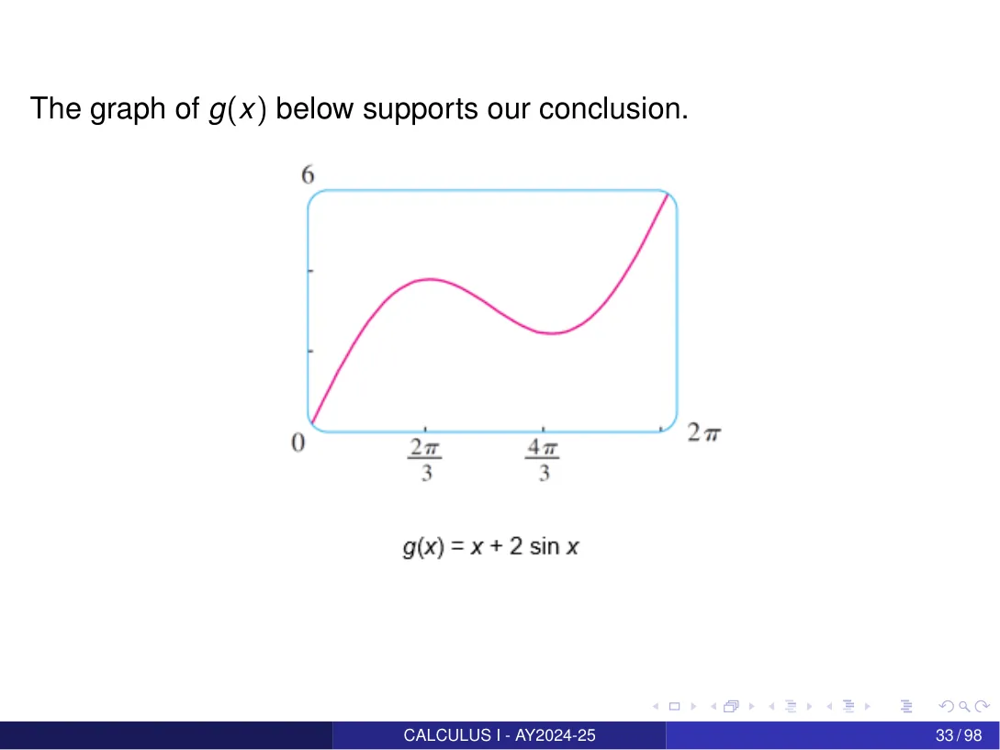
The graph supports the conclusion: a wavy increasing trend with a peak near $x\approx2.09$ (height $3.83$) and a dip near $x\approx4.19$ (height $2.46$).
Đồ thị ủng hộ kết luận: xu hướng tăng lượn sóng với một đỉnh gần $x\approx2.09$ (cao $3.83$) và một đáy gần $x\approx4.19$ (cao $2.46$).
Two increasing curves that bend differently · Hai đường cong tăng nhưng uốn khác nhau
★★ Important · Quan trọng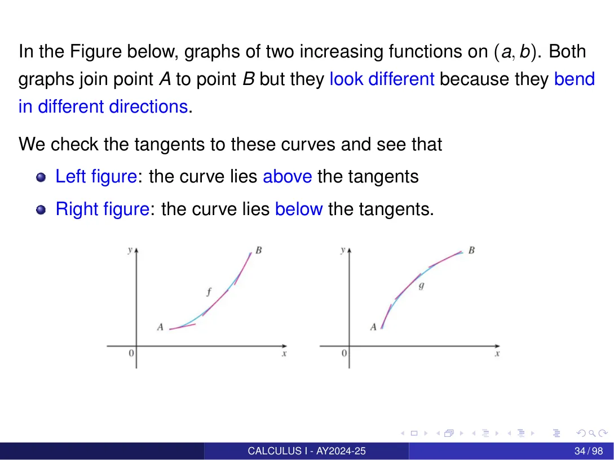
Two graphs join $A$ to $B$ and both increase, yet they look different: the left curve lies above its tangents, the right one below. Increasing is not enough to describe the shape; we also need the bending.
Hai đồ thị nối $A$ với $B$ và đều tăng, nhưng trông khác nhau: đường cong trái nằm trên các tiếp tuyến của nó, đường phải nằm dưới. Chỉ biết tăng thì chưa đủ mô tả dạng đồ thị; còn cần độ uốn.
Concave up and concave down · Lồi và lõm (hướng lên và hướng xuống)
★★★ Core · Cốt lõi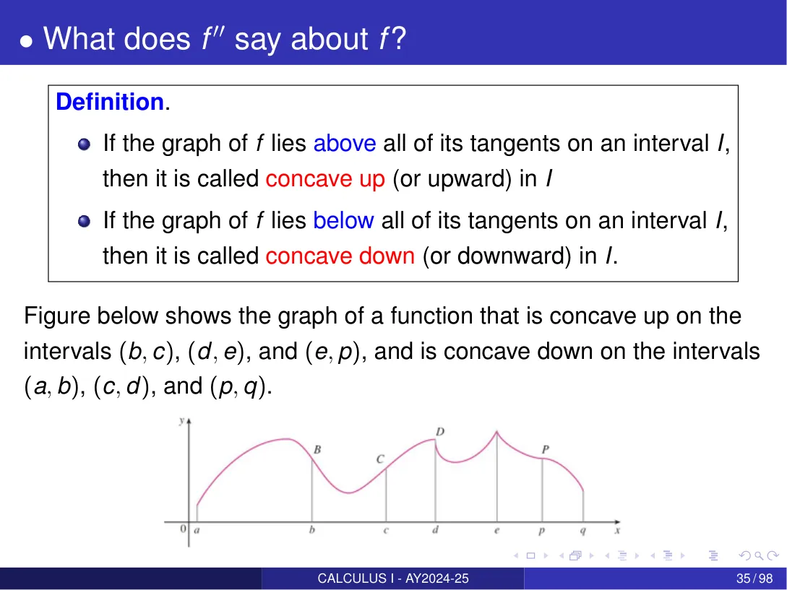
If the graph lies above all its tangents on $I$ it is concave up; if below, concave down. The figure shows concave up on $(b,c)$, $(d,e)$, $(e,p)$ and concave down on $(a,b)$, $(c,d)$, $(p,q)$. Note: "concave up" is the cup shape $\cup$.
Nếu đồ thị nằm trên mọi tiếp tuyến trên $I$ thì lõm hướng lên (concave up); nếu dưới thì hướng xuống (concave down). Hình cho thấy hướng lên trên $(b,c)$, $(d,e)$, $(e,p)$ và hướng xuống trên $(a,b)$, $(c,d)$, $(p,q)$. Lưu ý: "concave up" là hình chiếc cốc $\cup$.
Concavity and the slope of the tangent · Độ lồi và hệ số góc tiếp tuyến
★★★ Core · Cốt lõi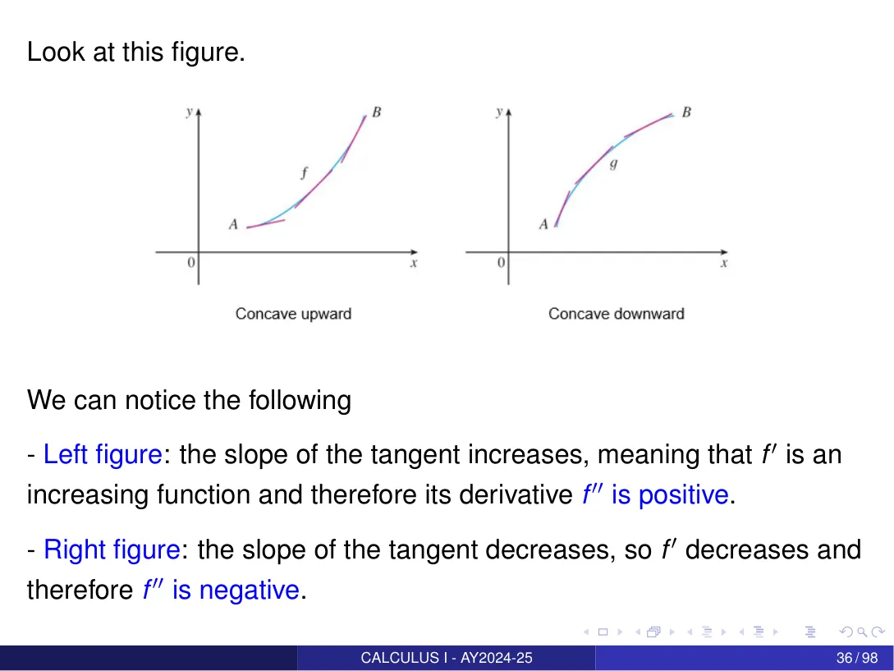
Left figure: the tangent slope increases, so $f'$ is increasing and its derivative $f''$ is positive. Right figure: the slope decreases, so $f''$ is negative.
Hình trái: hệ số góc tiếp tuyến tăng nên $f'$ tăng và đạo hàm của nó $f''$ dương. Hình phải: hệ số góc giảm nên $f''$ âm.
The Concavity Test · Phép thử độ lồi
★★★ Core · Cốt lõi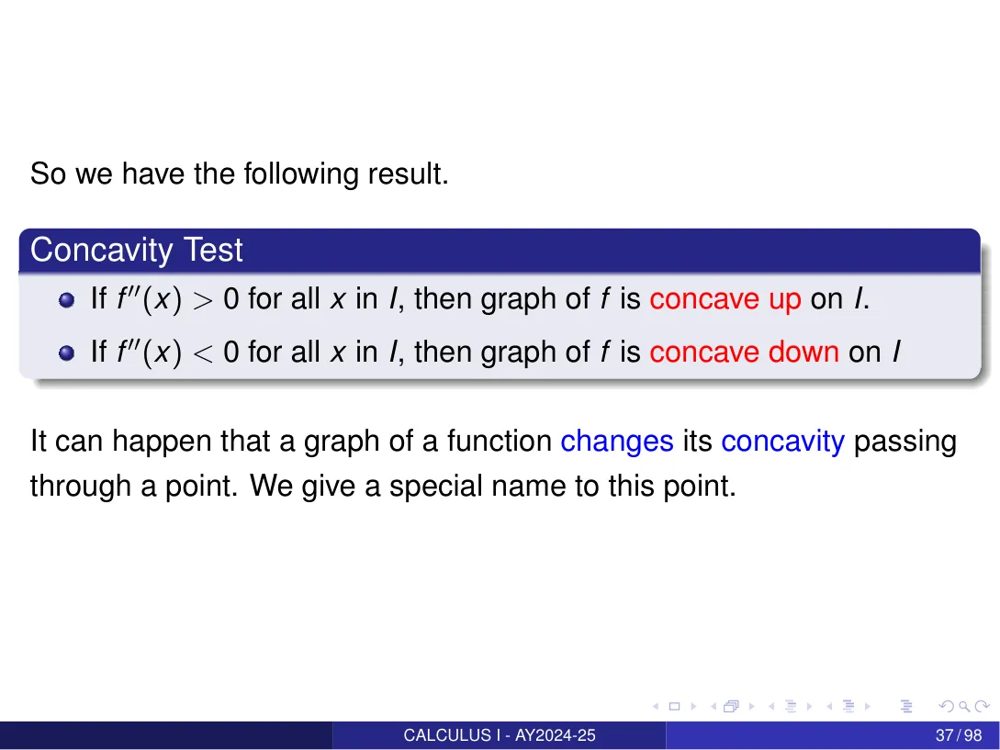
$f''>0$ on $I\Rightarrow$ concave up; $f''<0$ on $I\Rightarrow$ concave down. A point where the graph changes concavity gets a special name (next slide).
$f''>0$ trên $I\Rightarrow$ lõm hướng lên; $f''<0$ trên $I\Rightarrow$ hướng xuống. Điểm mà đồ thị đổi độ lồi có tên riêng (slide sau).
Find where $f(x)=x^3-3x^2$ is concave up and concave down.
Tìm nơi $f(x)=x^3-3x^2$ lõm hướng lên và hướng xuống.
Answer and solution · Đáp án và lời giải
Answer · Đáp án: concave down on $(-\infty,1)$, concave up on $(1,\infty)$; inflection at $x=1$
$f''(x)=6x-6=6(x-1)$: negative for $x<1$, positive for $x>1$. The concavity changes at $x=1$.
$f''(x)=6x-6=6(x-1)$: âm khi $x<1$, dương khi $x>1$. Độ lồi đổi tại $x=1$.
Inflection points and the Second Derivative Test · Điểm uốn và phép thử đạo hàm bậc hai
★★★ Core · Cốt lõi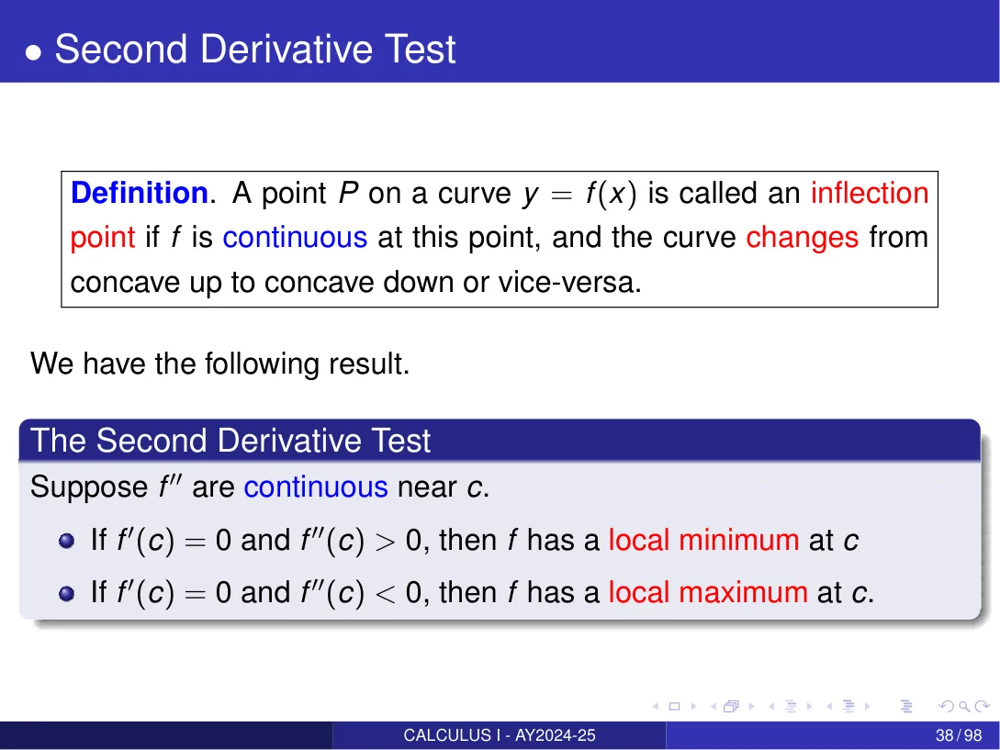
An inflection point is a point of the curve where $f$ is continuous and the concavity changes. Second Derivative Test: if $f'(c)=0$ and $f''(c)>0$, local min; if $f'(c)=0$ and $f''(c)<0$, local max. Intuition: a cup $\cup$ has a minimum at the bottom, a cap $\cap$ a maximum at the top.
Điểm uốn là điểm của đường cong mà $f$ liên tục và độ lồi đổi chiều. Phép thử đạo hàm bậc hai: nếu $f'(c)=0$ và $f''(c)>0$ thì cực tiểu; nếu $f'(c)=0$ và $f''(c)<0$ thì cực đại. Trực giác: cái cốc $\cup$ có cực tiểu ở đáy, cái mũ $\cap$ có cực đại ở đỉnh.
Use the Second Derivative Test on $f(x)=x^3-3x^2+1$ at its critical points $0$ and $2$.
Dùng phép thử đạo hàm bậc hai cho $f(x)=x^3-3x^2+1$ tại các điểm tới hạn $0$ và $2$.
Answer and solution · Đáp án và lời giải
Answer · Đáp án: $f''(0)=-6<0$: local max; $f''(2)=6>0$: local min
$f''(x)=6x-6$. At $0$: $-6<0$, so a local maximum $f(0)=1$. At $2$: $6>0$, so a local minimum $f(2)=-3$.
$f''(x)=6x-6$. Tại $0$: $-6<0$ nên cực đại địa phương $f(0)=1$. Tại $2$: $6>0$ nên cực tiểu địa phương $f(2)=-3$.
When the Second Derivative Test fails · Khi phép thử đạo hàm bậc hai bất lực
★★★ Core · Cốt lõi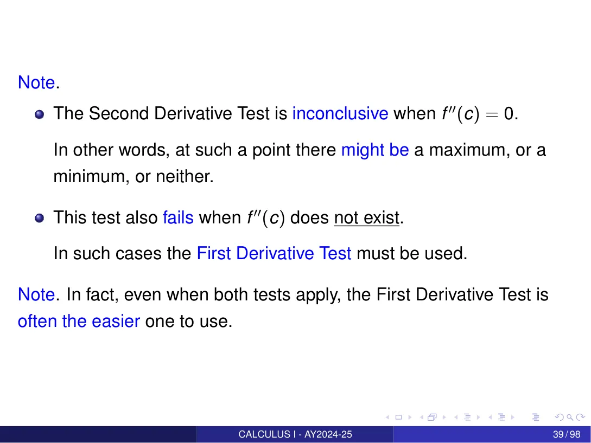
If $f''(c)=0$ the test is inconclusive: there may be a max, a min or neither. It also fails when $f''(c)$ does not exist. Then use the First Derivative Test. In fact, even when both apply, the first-derivative test is often easier.
Nếu $f''(c)=0$ phép thử không kết luận được: có thể có cực đại, cực tiểu hoặc không có gì. Nó cũng thất bại khi $f''(c)$ không tồn tại. Khi đó dùng phép thử đạo hàm bậc một. Thực ra, ngay cả khi cả hai dùng được thì phép thử bậc một thường dễ hơn.
For $f(x)=x^4$ and $g(x)=x^3$ at $x=0$: what does the Second Derivative Test say, and what is the truth?
Với $f(x)=x^4$ và $g(x)=x^3$ tại $x=0$: phép thử đạo hàm bậc hai cho biết gì và sự thật là gì?
Answer and solution · Đáp án và lời giải
Answer · Đáp án: inconclusive for both ($f''(0)=g''(0)=0$); $x^4$ has a minimum at $0$, $x^3$ has none
$f''(x)=12x^2$ and $g''(x)=6x$ both vanish at $0$. The first-derivative sign tells: $f'=4x^3$ goes $-\to+$ (min), $g'=3x^2\ge0$ never changes sign (no extremum).
$f''(x)=12x^2$ và $g''(x)=6x$ đều bằng $0$ tại $0$. Dấu của đạo hàm bậc một cho biết: $f'=4x^3$ đổi $-\to+$ (cực tiểu), $g'=3x^2\ge0$ không đổi dấu (không có cực trị).
Roadmap: curve sketching (self-study) · Lộ trình: khảo sát đồ thị (tự học)
★ Context · Bổ trợ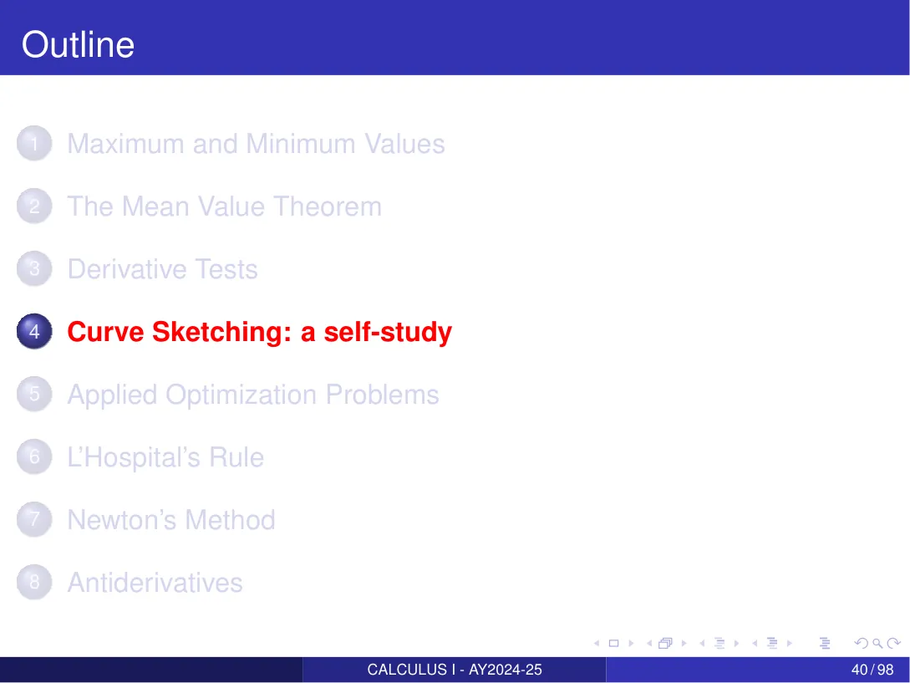
Outline: part 4, curve sketching, marked self-study. We go through asymptotes and the checklist quickly.
Lộ trình: phần 4, khảo sát đồ thị, đánh dấu tự học. Ta đi nhanh qua tiệm cận và danh sách kiểm tra.
Asymptotes: the idea · Tiệm cận: ý tưởng
★★ Important · Quan trọng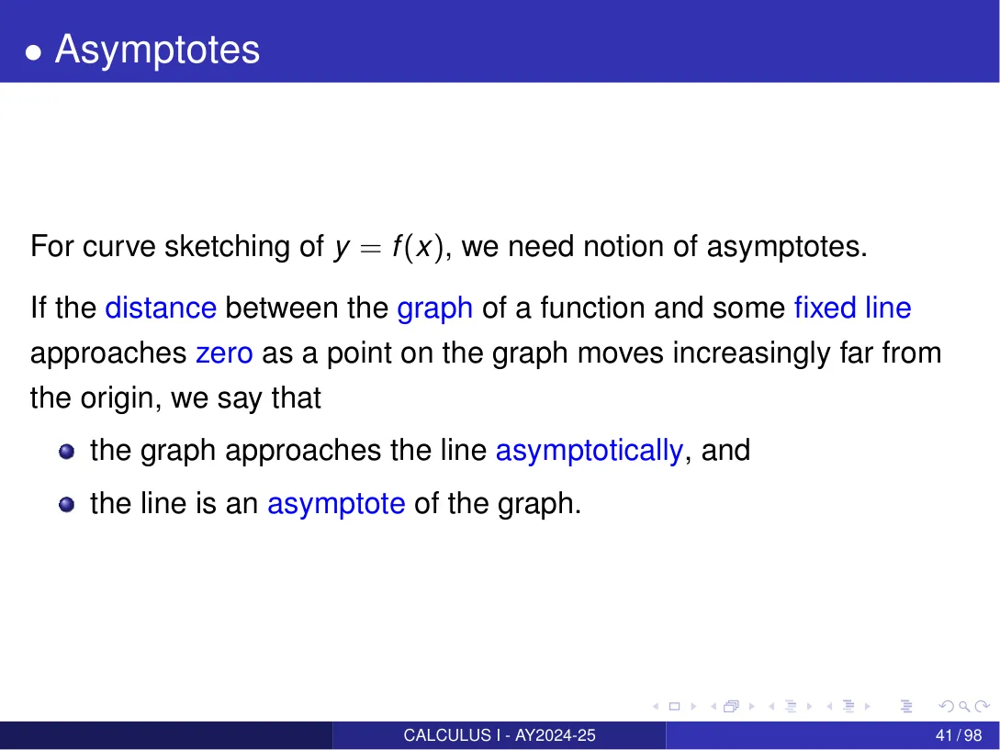
If the distance between the graph and a fixed line tends to $0$ as the point moves far away, the graph approaches the line asymptotically and the line is an asymptote. Three kinds follow: vertical, horizontal, oblique.
Nếu khoảng cách giữa đồ thị và một đường thẳng cố định tiến tới $0$ khi điểm chạy ra xa thì đồ thị tiến tiệm cận tới đường thẳng và đường thẳng đó là tiệm cận. Có ba loại: đứng, ngang, xiên.
Vertical asymptotes · Tiệm cận đứng
★★ Important · Quan trọng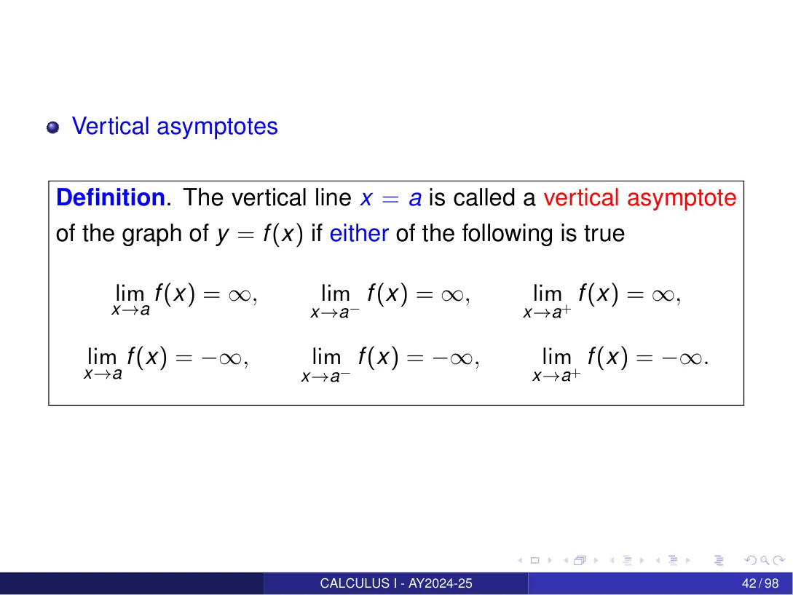
$x=a$ is a vertical asymptote if $f(x)\to\pm\infty$ as $x\to a$, $a^-$ or $a^+$ (any of the six cases). Look for it where the denominator vanishes, or at an endpoint of the domain such as $\ln x$ at $0$.
$x=a$ là tiệm cận đứng nếu $f(x)\to\pm\infty$ khi $x\to a$, $a^-$ hoặc $a^+$ (một trong sáu trường hợp). Tìm nó nơi mẫu bằng $0$, hoặc tại đầu mút của tập xác định như $\ln x$ tại $0$.
Find the vertical and horizontal asymptotes of $f(x)=\dfrac{x+1}{x-2}$.
Tìm tiệm cận đứng và ngang của $f(x)=\dfrac{x+1}{x-2}$.
Answer and solution · Đáp án và lời giải
Answer · Đáp án: vertical $x=2$; horizontal $y=1$
At $x=2$ the denominator vanishes and the numerator is $3$: $f\to\pm\infty$. As $x\to\pm\infty$, $\frac{1+1/x}{1-2/x}\to1$.
Tại $x=2$ mẫu bằng $0$ và tử bằng $3$: $f\to\pm\infty$. Khi $x\to\pm\infty$, $\frac{1+1/x}{1-2/x}\to1$.
A vertical asymptote at a point where $f$ is defined · Tiệm cận đứng tại điểm mà $f$ vẫn xác định
★★ Important · Quan trọng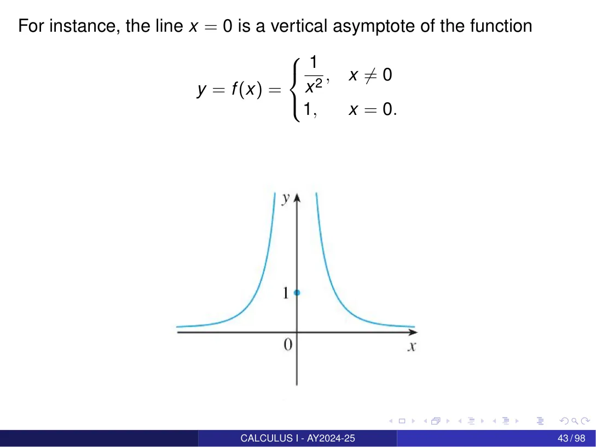
Example: $f(x)=\frac1{x^2}$ for $x\ne0$ and $f(0)=1$. The line $x=0$ is still a vertical asymptote: asymptotes depend on the limit, not on the value at the point.
Ví dụ: $f(x)=\frac1{x^2}$ với $x\ne0$ và $f(0)=1$. Đường thẳng $x=0$ vẫn là tiệm cận đứng: tiệm cận phụ thuộc vào giới hạn, không phụ thuộc giá trị tại điểm đó.
Horizontal asymptotes · Tiệm cận ngang
★★ Important · Quan trọng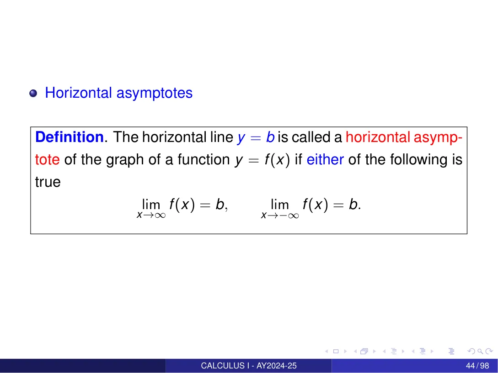
$y=b$ is a horizontal asymptote if $\lim_{x\to\infty}f(x)=b$ or $\lim_{x\to-\infty}f(x)=b$. A graph can have two different ones (one at each end), as in the next example.
$y=b$ là tiệm cận ngang nếu $\lim_{x\to\infty}f(x)=b$ hoặc $\lim_{x\to-\infty}f(x)=b$. Đồ thị có thể có hai tiệm cận ngang khác nhau (mỗi đầu một cái), như ở ví dụ sau.
Example: two horizontal asymptotes $y=\pm1$ · Ví dụ: hai tiệm cận ngang $y=\pm1$
★★ Important · Quan trọng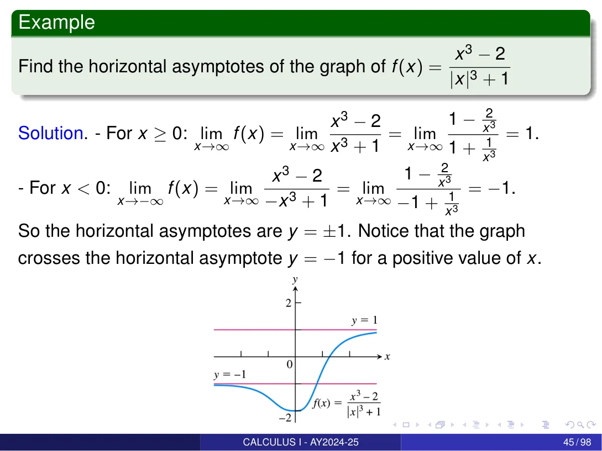
$f(x)=\frac{x^3-2}{|x|^3+1}$. For $x\ge0$: $\frac{x^3-2}{x^3+1}\to1$. For $x<0$: $|x|^3=-x^3$ so $\frac{x^3-2}{-x^3+1}\to-1$. So $y=1$ at the right end and $y=-1$ at the left end. The graph may cross an asymptote at finite $x$ (here $y=-1$).
$f(x)=\frac{x^3-2}{|x|^3+1}$. Với $x\ge0$: $\frac{x^3-2}{x^3+1}\to1$. Với $x<0$: $|x|^3=-x^3$ nên $\frac{x^3-2}{-x^3+1}\to-1$. Vậy $y=1$ ở đầu phải và $y=-1$ ở đầu trái. Đồ thị có thể cắt tiệm cận tại $x$ hữu hạn (ở đây là $y=-1$).
Find the horizontal asymptotes of $f(x)=\dfrac{x}{\sqrt{x^2+1}}$.
Tìm các tiệm cận ngang của $f(x)=\dfrac{x}{\sqrt{x^2+1}}$.
Answer and solution · Đáp án và lời giải
Answer · Đáp án: $y=1$ (right) and $y=-1$ (left)
$\sqrt{x^2+1}\approx|x|$ so $f\to\frac{x}{|x|}$: $+1$ as $x\to\infty$ and $-1$ as $x\to-\infty$.
$\sqrt{x^2+1}\approx|x|$ nên $f\to\frac{x}{|x|}$: $+1$ khi $x\to\infty$ và $-1$ khi $x\to-\infty$.
Oblique asymptotes · Tiệm cận xiên
★★ Important · Quan trọng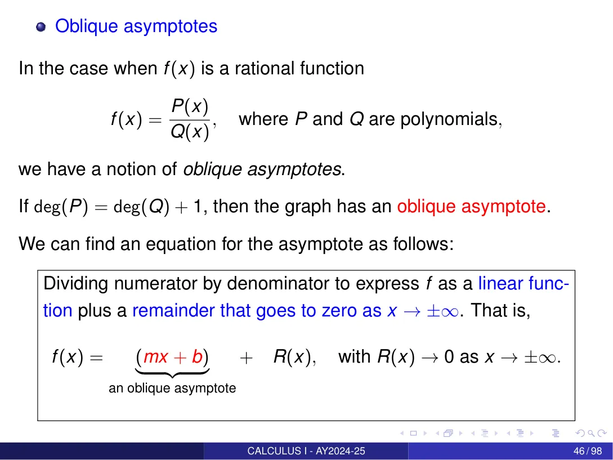
For a rational function $\frac{P}{Q}$ with $\deg P=\deg Q+1$ there is an oblique asymptote. Find it by polynomial division: $f(x)=(mx+b)+R(x)$ with $R(x)\to0$ as $x\to\pm\infty$; the line $y=mx+b$ is the asymptote.
Với hàm hữu tỉ $\frac{P}{Q}$ có $\deg P=\deg Q+1$ tồn tại tiệm cận xiên. Tìm bằng phép chia đa thức: $f(x)=(mx+b)+R(x)$ với $R(x)\to0$ khi $x\to\pm\infty$; đường thẳng $y=mx+b$ là tiệm cận.
Example: the oblique asymptote of $\frac{x^2-3}{2x-4}$ · Ví dụ: tiệm cận xiên của $\frac{x^2-3}{2x-4}$
★★ Important · Quan trọng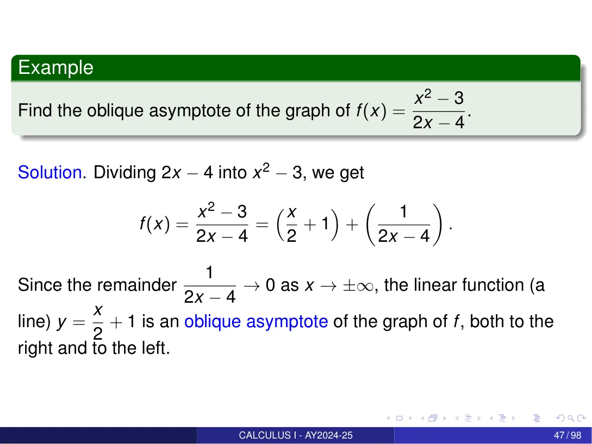
Divide $2x-4$ into $x^2-3$: $\frac{x^2-3}{2x-4}=\left(\frac x2+1\right)+\frac1{2x-4}$. Check: $\left(\frac x2+1\right)(2x-4)=x^2-4$ and the remainder is $1$. The remainder tends to $0$, so $y=\frac x2+1$ is the oblique asymptote at both ends.
Chia $x^2-3$ cho $2x-4$: $\frac{x^2-3}{2x-4}=\left(\frac x2+1\right)+\frac1{2x-4}$. Kiểm tra: $\left(\frac x2+1\right)(2x-4)=x^2-4$ và số dư là $1$. Số dư tiến tới $0$ nên $y=\frac x2+1$ là tiệm cận xiên ở cả hai đầu.
Find the oblique asymptote of $f(x)=\dfrac{x^2+1}{x-1}$.
Tìm tiệm cận xiên của $f(x)=\dfrac{x^2+1}{x-1}$.
Answer and solution · Đáp án và lời giải
Answer · Đáp án: $y=x+1$
$x^2+1=(x-1)(x+1)+2$, so $f(x)=x+1+\frac2{x-1}$ and the remainder $\frac2{x-1}\to0$.
$x^2+1=(x-1)(x+1)+2$ nên $f(x)=x+1+\frac2{x-1}$ và số dư $\frac2{x-1}\to0$.
The graph of that function · Đồ thị của hàm đó
★★ Important · Quan trọng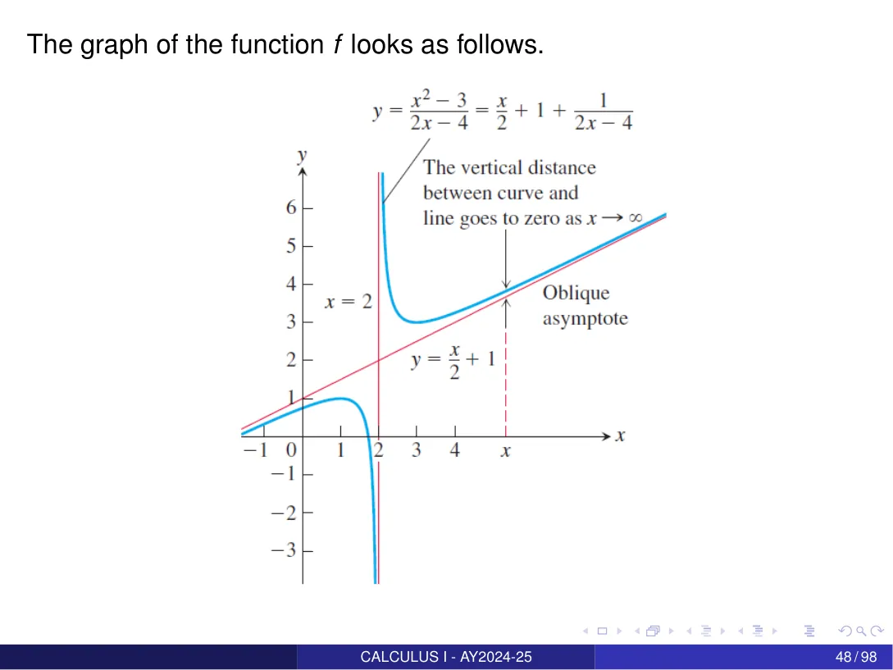
The graph has a vertical asymptote at $x=2$ and approaches the dashed line $y=\frac x2+1$ at both ends. A picture that shows both kinds of asymptote at once.
Đồ thị có tiệm cận đứng tại $x=2$ và tiến sát đường nét đứt $y=\frac x2+1$ ở cả hai đầu. Một hình cho thấy đồng thời hai loại tiệm cận.
Curve sketching guidelines, A and B: domain and intercepts · Quy trình khảo sát, A và B: tập xác định và giao điểm
★★ Important · Quan trọng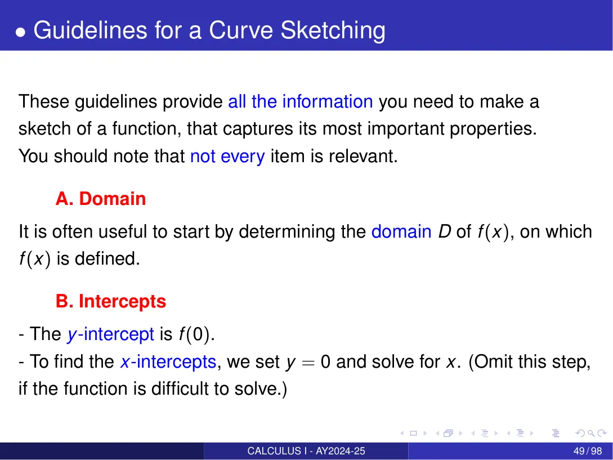
Not every item is relevant every time. A. Domain of $f$. B. Intercepts: the $y$-intercept is $f(0)$; for the $x$-intercepts solve $f(x)=0$ (skip if it is hard).
Không phải mục nào cũng cần dùng mỗi lần. A. Tập xác định của $f$. B. Giao điểm: giao điểm với trục tung là $f(0)$; giao với trục hoành giải $f(x)=0$ (bỏ qua nếu khó).
Guidelines C and D: symmetry and asymptotes · Quy trình C và D: đối xứng và tiệm cận
★★ Important · Quan trọng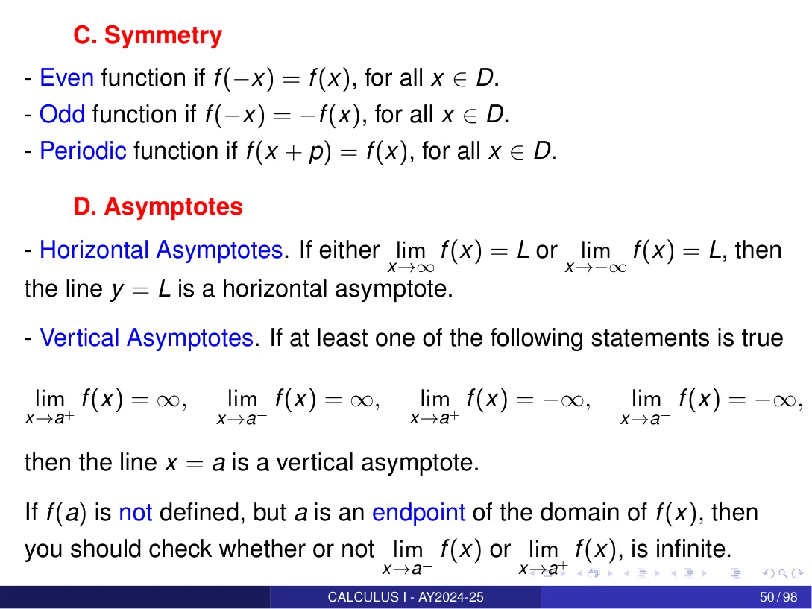
C. Symmetry: even, odd or periodic. D. Asymptotes: horizontal (limits at $\pm\infty$), vertical (infinite one-sided limits, also at endpoints of the domain where $f$ is undefined).
C. Tính đối xứng: chẵn, lẻ hoặc tuần hoàn. D. Tiệm cận: ngang (giới hạn tại $\pm\infty$), đứng (giới hạn một phía vô cực, kể cả tại đầu mút tập xác định nơi $f$ không xác định).
Guidelines D (oblique) and E: monotonic intervals · Quy trình D (xiên) và E: khoảng đơn điệu
★★ Important · Quan trọngGuideline F: local maxima and minima · Quy trình F: cực đại và cực tiểu
★★ Important · Quan trọngFind the critical points ($f'=0$ or does not exist), then the First Derivative Test: $+\to-$ is a local max, $-\to+$ a local min. The Second Derivative Test may be used when $f'(c)=0$ and $f''(c)\ne0$.
Tìm các điểm tới hạn ($f'=0$ hoặc không tồn tại), rồi dùng phép thử bậc một: $+\to-$ là cực đại, $-\to+$ là cực tiểu. Có thể dùng phép thử bậc hai khi $f'(c)=0$ và $f''(c)\ne0$.
Guidelines G and H: concavity and the sketch · Quy trình G và H: độ lồi và vẽ đồ thị
★★ Important · Quan trọngG. Compute $f''$: concave up where $f''>0$, down where $f''<0$; inflection points where concavity changes. H. Sketch: draw dashed asymptotes, plot intercepts, extrema and inflection points, then join them rising and falling according to E, bending according to G, approaching the asymptotes.
G. Tính $f''$: lõm hướng lên khi $f''>0$, hướng xuống khi $f''<0$; điểm uốn nơi độ lồi đổi. H. Vẽ: vẽ tiệm cận bằng nét đứt, đánh dấu giao điểm, cực trị và điểm uốn, rồi nối chúng lên xuống theo E, uốn theo G, tiến sát các tiệm cận.
Exercise: sketch $f(x)=\frac{x^3}{x^2+1}$ · Bài tập: vẽ đồ thị $f(x)=\frac{x^3}{x^2+1}$
★★★ Core · Cốt lõiRun the checklist. A. Domain $\mathbb R$. B. Only intercept $(0,0)$. C. Odd. D. No vertical asymptote; division gives $f(x)=x-\frac x{x^2+1}$, so the oblique asymptote is $y=x$. E. $f'(x)=\frac{x^2(x^2+3)}{(x^2+1)^2}\ge0$: increasing everywhere, with $f'(0)=0$ but no extremum. G. $f''(x)=\frac{2x(3-x^2)}{(x^2+1)^3}$: concave up on $(-\infty,-\sqrt3)$ and $(0,\sqrt3)$, concave down on $(-\sqrt3,0)$ and $(\sqrt3,\infty)$; inflection points at $x=0,\pm\sqrt3$.
Chạy danh sách kiểm tra. A. Tập xác định $\mathbb R$. B. Giao điểm duy nhất $(0,0)$. C. Hàm lẻ. D. Không có tiệm cận đứng; phép chia cho $f(x)=x-\frac x{x^2+1}$ nên tiệm cận xiên là $y=x$. E. $f'(x)=\frac{x^2(x^2+3)}{(x^2+1)^2}\ge0$: tăng khắp nơi, $f'(0)=0$ nhưng không có cực trị. G. $f''(x)=\frac{2x(3-x^2)}{(x^2+1)^3}$: lõm hướng lên trên $(-\infty,-\sqrt3)$ và $(0,\sqrt3)$, hướng xuống trên $(-\sqrt3,0)$ và $(\sqrt3,\infty)$; điểm uốn tại $x=0,\pm\sqrt3$.
Check the slide's analysis: verify $f'$, $f''$ and the oblique asymptote of $f(x)=\dfrac{x^3}{x^2+1}$.
Kiểm tra phần phân tích trên slide: xác minh $f'$, $f''$ và tiệm cận xiên của $f(x)=\dfrac{x^3}{x^2+1}$.
Answer and solution · Đáp án và lời giải
Answer · Đáp án: $f'=\dfrac{x^2(x^2+3)}{(x^2+1)^2}$, $f''=\dfrac{2x(3-x^2)}{(x^2+1)^3}$, asymptote $y=x$
Quotient rule gives $f'=\frac{3x^2(x^2+1)-2x\cdot x^3}{(x^2+1)^2}=\frac{x^4+3x^2}{(x^2+1)^2}$. Differentiating again gives the $f''$ above. The remainder in $f=x-\frac x{x^2+1}$ tends to $0$.
Quy tắc thương cho $f'=\frac{3x^2(x^2+1)-2x\cdot x^3}{(x^2+1)^2}=\frac{x^4+3x^2}{(x^2+1)^2}$. Đạo hàm tiếp cho $f''$ như trên. Số dư trong $f=x-\frac x{x^2+1}$ tiến tới $0$.